[!IMPORTANT] Mundo 2 · Memória e dados · Rota do jogo: etapa 8 de 29
Missão: agrupar dados com
struct,union,enume operações com bits.Vem de: Módulo 07 · Memória dinâmica. Segue para: Módulo 27 · Detalhes de C que caem em prova.
Checkpoints desta fase:
- Ler os assuntos 0059 a 0066 e refazer os exemplos
- Resolver os 4 exercícios de cada assunto, escrevendo o código sozinho
- Fechar a lista prática (P0801 a P0830)
- Enfrentar os desafios do módulo
- Chefão: resolver as questões de prova do módulo sem consultar
Como guardar dados que vêm em pacote: struct, typedef, vetor de structs,
ponteiro para struct, enum, union e, no nível do bit, máscaras e flags. Depende
de ponteiros (módulo 06) e de malloc/realloc (módulo 07); struct com
ponteiro é a peça das estruturas de dados que começam no módulo 10.
->, struct no heap e custo de passar por valor& | ^ ~ << >>, máscaras e flags (as permissões rwx do Linux)Revise o módulo 07 se int *p = malloc(n * sizeof *p); não parece natural. Os
valores de sizeof e de ordem de bytes valem para um PC de 64 bits com Linux;
em outra máquina podem mudar.
gcc ~/LPEDC/material/A117.c -o ~/LPEDC/material/A117 && ~/LPEDC/material/A117
| # | Assunto |
|---|---|
| 0059 | Struct |
| 0060 | Typedef |
| 0061 | Vetor de structs |
| 0062 | Ponteiro para struct |
| 0063 | Enum |
| 0064 | Union |
| 0065 | Bits, máscaras e flags |
| 0066 | Juntando tudo: o cardápio |
[!NOTE] Cada assunto é um capítulo: Conceito (a explicação), Exemplos de uso (programas que compilam sozinhos: rode com o comando abaixo de cada um e compare com a saída no fim do código) e Exercícios (cada um é um arquivo em
material/com o esqueleto, as dicas e o espaço para a resposta; resoluções em_respostas/08-structs/).
Você pede açaí pelo app: copo M, 2 unidades, R$ 18,50 cada. Para o sistema,
esse pedido junta três informações de tipos diferentes (um caractere, um
inteiro e um preço) que andam sempre juntas. Com variáveis soltas, dez
pedidos virariam trinta variáveis (tamanho3, quantidade3, preco3...), e
nada no código diria que as três do final 3 pertencem ao mesmo pedido.
Pense na ficha de cadastro de um consultório: uma folha só, com espaço para nome, idade e telefone. Quem pega a ficha leva tudo de uma vez. A struct é essa ficha: ela agrupa variáveis de tipos diferentes sob um nome só, e cada variável de dentro se chama campo (ou membro). Livros e provas também chamam a struct de registro ou estrutura (BACKES, 2013, cap. 8).
Até aqui você usou dois tipos de dado. Os simples, como int, char e
double, guardam um valor só. Os compostos guardam vários: o vetor junta
valores do mesmo tipo, por isso se diz homogêneo; a struct junta valores
de tipos diferentes, e é heterogênea (CELES; CERQUEIRA; RANGEL, 2016).
O primeiro passo é descrever o molde, dizendo quais campos a ficha tem:
struct pedido {
char tamanho;
int quantidade;
double preco;
}; // <- esse ; é obrigatório
Essa declaração cria um tipo novo, chamado struct pedido (as duas
palavras juntas formam o nome). O molde não ocupa memória nenhuma: ele é a
planta da casa, não a casa. A memória só aparece quando você declara uma
variável desse tipo, como struct pedido p1;, e aí p1 ganha espaço para os
três campos (DEITEL; DEITEL, 2011, cap. 10).
Para dar valores na declaração, use chaves com os valores na ordem dos
campos: struct pedido p1 = {'M', 2, 18.50};. Desde o C99 você também pode
nomear cada campo, {.tamanho = 'M', .quantidade = 2, .preco = 18.50}, o que
protege contra trocar a ordem sem perceber. Campo que você não citar começa
com zero (BACKES, 2013, cap. 8). Se precisar de uma struct só por um
instante, por exemplo para passar a uma função, o literal composto cria
uma sem variável: (struct pedido){'G', 1, 22.00} (BACKES, 2013).
Para ler ou mudar um campo, use o ponto: p1.quantidade vale 2, e
p1.preco = 20.0; troca o preço. Cada campo se comporta como uma variável
comum do seu tipo. p1.tamanho é um char, e &p1.quantidade é o endereço
de um int, do tipo int *, que você pode passar ao scanf (FEOFILOFF,
2009, ap. E).
A struct pode ter vetores e outras structs dentro. Se o cliente tem um campo
end que é uma struct de endereço, você chega à cidade com dois pontos:
cliente.end.cidade. E a atribuição b = a funciona entre structs do
mesmo tipo: ela copia todos os bytes de uma vez, inclusive os vetores que
estão dentro. Isso chama a atenção porque vetor sozinho não se copia com =;
dentro de uma struct, copia (BACKES, 2013, cap. 8).
Falta entender o tamanho. Os campos ficam na memória na ordem em que você os
declarou, mas não necessariamente colados. O processador lê mais rápido um
int que começa num endereço múltiplo de 4 e um double que começa num
múltiplo de 8, então o compilador alinha os campos e pula bytes quando
precisa. Esses bytes vazios se chamam preenchimento (padding). No
struct pedido, char (1) + int (4) + double (8) somam 13 bytes, mas o
sizeof dá 16: o compilador deixa 3 bytes livres depois de tamanho, e o
preco começa no byte 8 (DEITEL; DEITEL, 2011, cap. 10). A macro
offsetof(struct pedido, preco), de <stddef.h>, confirma: devolve 8. A
ordem dos campos muda a conta. Com char, double e int, nessa ordem, o
sizeof sobe para 24.
Esse preenchimento explica uma proibição do C: você não pode comparar duas
structs com ==. Os bytes de enchimento guardam lixo, e duas structs com os
mesmos campos poderiam diferir nesses bytes. Para saber se dois pedidos são
iguais, compare campo a campo (DEITEL; DEITEL, 2011, cap. 10).
[!WARNING]
struct pedido p2 = p1;cria uma cópia independente: mudarp2.quantidadenão mexe emp1. Também não funcionamp1 == p2(não compila; compare campo a campo) nemcliente.nome = "Ana";(usestrcpy(cliente.nome, "Ana")). E o;depois da}do molde é obrigatório: sem ele, o erro aparece numa linha seguinte.
O pedido de açaí: copo M, 2 unidades, R$ 18,50 cada. O programa multiplica dois
campos, chega a R$ 37,00 e decide o frete. O buraco cinza entre tamanho e
quantidade é o preenchimento:
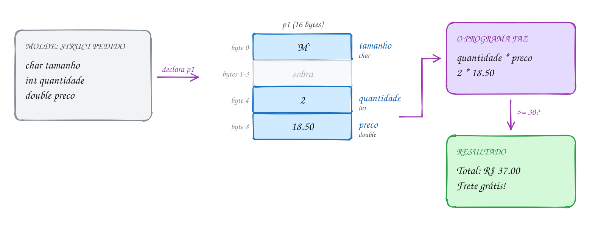
#include <stdio.h>
// o molde: diz quais campos um pedido tem (ainda não reserva memória)
struct pedido {
char tamanho; // 'P', 'M' ou 'G'
int quantidade; // quantos copos
double preco; // preço de cada copo
};
int main(void) {
struct pedido p1 = {'M', 2, 18.50}; // os valores vão na ordem dos campos
double total = p1.quantidade * p1.preco; // o ponto acessa um campo
printf("Pedido: %d copos %c de R$ %.2f\n", p1.quantidade, p1.tamanho, p1.preco);
printf("Total: R$ %.2f\n", total);
if (total >= 30.0) {
printf("Frete grátis!\n");
} else {
printf("Frete: R$ 5.00\n");
}
printf("O pedido ocupa %zu bytes\n", sizeof(struct pedido));
return 0;
}
// Saída:
// Pedido: 2 copos M de R$ 18.50
// Total: R$ 37.00
// Frete grátis!
// O pedido ocupa 16 bytes
A struct não muda os passos do programa; só leva os dados num pacote:
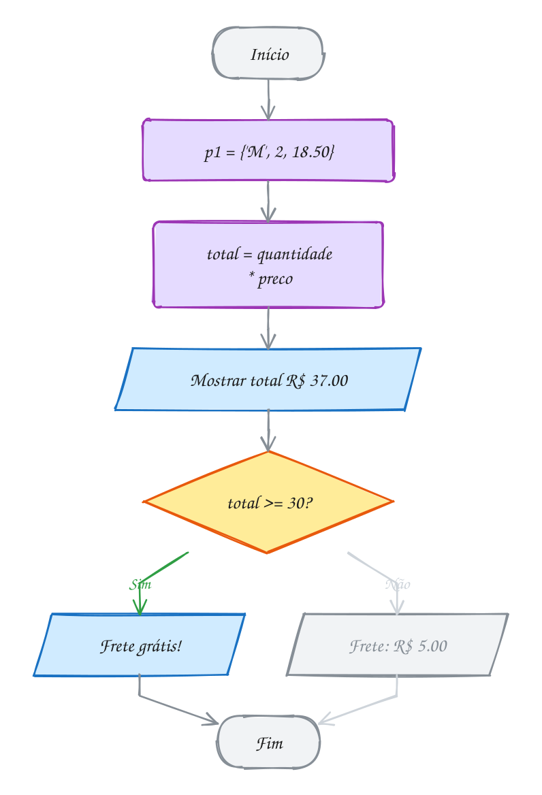
Exemplo A117 · A matrícula na academia
#include <stddef.h>
#include <stdio.h>
struct aluno {
char plano; // 'M' mensal, 'T' trimestral, 'A' anual
int faltas; // faltas no mês
double mensalidade;
int armario; // 0 = sem armário
};
int main(void) {
// com nome de campo, a ordem é livre; quem não aparece começa com zero
struct aluno caio = {.mensalidade = 99.90, .plano = 'M'};
printf("Caio: plano %c, R$ %.2f, %d faltas, armário %d\n",
caio.plano, caio.mensalidade, caio.faltas, caio.armario);
// literal composto: troca a struct inteira de uma vez
caio = (struct aluno){'A', 0, 79.90, 12};
printf("Caio: plano %c, R$ %.2f, %d faltas, armário %d\n",
caio.plano, caio.mensalidade, caio.faltas, caio.armario);
// comparar structs: campo a campo (== entre structs não compila)
struct aluno duda = caio;
duda.armario = 13;
if (duda.plano == caio.plano && duda.mensalidade == caio.mensalidade) {
printf("Duda e Caio têm o mesmo plano\n");
}
if (duda.armario != caio.armario) {
printf("mas armários diferentes: %d e %d\n", duda.armario, caio.armario);
}
// onde cada campo começa dentro da struct
printf("plano em %zu, faltas em %zu, mensalidade em %zu, armario em %zu\n",
offsetof(struct aluno, plano), offsetof(struct aluno, faltas),
offsetof(struct aluno, mensalidade), offsetof(struct aluno, armario));
// 16 + 4 = 20, mas o total arredonda para múltiplo de 8 (o double): 24
printf("sizeof: %zu bytes\n", sizeof(struct aluno));
return 0;
}
// Saída:
// Caio: plano M, R$ 99.90, 0 faltas, armário 0
// Caio: plano A, R$ 79.90, 0 faltas, armário 12
// Duda e Caio têm o mesmo plano
// mas armários diferentes: 13 e 12
// plano em 0, faltas em 4, mensalidade em 8, armario em 16
// sizeof: 24 bytes
gcc ~/LPEDC/material/A117.c -o ~/LPEDC/material/A117 && ~/LPEDC/material/A117
Exemplo A118 · A ficha copiada
#include <stdio.h>
#include <string.h>
struct endereco {
char cidade[20];
char uf[3];
};
// uma struct pode ter outra struct dentro (struct aninhada)
struct cliente {
char nome[20];
int pontos;
struct endereco end;
};
int main(void) {
// inicialização com nomes de campo (C99): a ordem não importa
struct cliente ana = {
.nome = "Ana",
.pontos = 120,
.end = {.cidade = "Recife", .uf = "PE"},
};
struct cliente copia = ana; // copia TODOS os bytes, inclusive os vetores
strcpy(copia.nome, "Bia"); // campo vetor: strcpy, não =
copia.pontos = 0;
strcpy(copia.end.cidade, "Natal"); // ponto encadeado: copia.end.cidade
printf("%s, %d pontos, %s-%s\n", ana.nome, ana.pontos, ana.end.cidade, ana.end.uf);
printf("%s, %d pontos, %s-%s\n", copia.nome, copia.pontos, copia.end.cidade, copia.end.uf);
return 0;
}
// Saída:
// Ana, 120 pontos, Recife-PE
// Bia, 0 pontos, Natal-PE
gcc ~/LPEDC/material/A118.c -o ~/LPEDC/material/A118 && ~/LPEDC/material/A118
Exercício E349 · ★☆☆
Crie uma struct livro com os campos titulo (até 39 letras), autor (até 29 letras), ano (int) e preco (double). Declare uma variável já inicializada com o livro abaixo e mostre os campos e o preço com 10% de desconto.
Saída esperada:
Livro: Dom Casmurro
Autor: Machado de Assis
Ano: 1899
Preço: R$ 34.90
Na promoção: R$ 31.41
Exercício E351 · ★★☆
Um terreno retangular é descrito por dois cantos: o inferior esquerdo (2, 1) e o superior direito (10, 6), em metros. Crie uma struct ponto (x e y, double) e uma struct retangulo com dois campos struct ponto. Escreva funções que recebem o retângulo e devolvem a área e o perímetro, e uma que diz se um ponto (uma árvore, por exemplo) está dentro do terreno.
Saída esperada:
Largura: 8.0 m, altura: 5.0 m
Área: 40.0 m2
Perímetro: 26.0 m
Árvore em (4.0, 3.0): dentro
Árvore em (11.0, 2.0): fora
Exercício E352 · ★★☆
Crie a struct jogadora com nome (até 19 letras) e gols (int). Guarde em a a artilheira Marta, com 17 gols (o nome entra com strcpy), copie a para b com uma atribuição e mostre b. Depois confira se as duas fichas são iguais, comparando campo a campo (o == não funciona com struct).
Saída esperada:
Marta: 17 gols
a e b são iguais
Exercício E353 · ★★★
Crie uma struct data (dia, mes, ano) e escreva:
- struct data dia_seguinte(struct data d): devolve a data do dia seguinte,
tratando fim de mês, fim de ano e fevereiro em ano bissexto;
- int comparar(struct data a, struct data b): devolve -1 se a vem antes,
0 se são iguais e 1 se a vem depois.
Teste com as datas abaixo:
Saída esperada:
28/02/2024 -> 29/02/2024
28/02/2025 -> 01/03/2025
31/12/2025 -> 01/01/2026
15/03/2025 vem antes de 02/11/2025
No assunto anterior, todo pedido era declarado como struct pedido p1;. As
duas palavras sempre juntas cansam num programa grande, e o nome do tipo fica
mais comprido que a ideia que ele representa. O C oferece um jeito de dar um
nome mais curto, ou mais expressivo, a um tipo que já existe.
No grupo da família, ninguém chama o seu tio de "José Carlos da Silva". É "Zé". O apelido não cria outra pessoa: é o mesmo tio, com um nome mais prático. O typedef faz isso com tipos: ele dá um apelido a um tipo existente e cria um sinônimo, sem criar um tipo novo (BACKES, 2013, cap. 8).
A forma de escrever segue uma regra simples. Escreva a declaração de uma
variável do jeito de sempre e ponha a palavra typedef na frente. O nome que
seria a variável passa a ser o nome do tipo (FEOFILOFF, 2009, ap. J):
double Reais; // uma variável chamada Reais
typedef double Reais; // um apelido: Reais agora é o mesmo que double
Depois da segunda linha, Reais saldo; e double saldo; declaram
exatamente a mesma coisa. O ganho é de leitura: quem vê Reais entende que
ali mora dinheiro, e o compilador continua vendo um double.
O uso mais comum é com struct, e há duas maneiras. Você pode batizar uma
struct que já tem nome, com typedef struct pix Pix;, ou fazer tudo de uma
vez, declarando a struct sem nome e dando o apelido logo depois da chave
(DEITEL; DEITEL, 2011, cap. 10):
typedef struct {
char chave[40];
Reais valor;
int hora;
} Pix;
A partir daí, Pix p; basta, sem a palavra struct. Repare que o campo
valor usa o apelido Reais definido antes: um typedef pode usar outro.
Escrever nome de tipo com a inicial maiúscula é uma convenção, e ela ajuda a
separar tipo de variável no meio do código: Pix é o tipo, p é a variável
(DEITEL; DEITEL, 2011, cap. 10).
Struct, union e enum, com ou sem typedef, formam o que os livros e o edital
chamam de tipos definidos pelo programador: tipos que não vêm prontos com
a linguagem, e que você monta para descrever o seu problema (CELES; CERQUEIRA;
RANGEL, 2016). Os próximos assuntos apresentam o enum e a union.
Você já usou vários typedefs sem saber. size_t, o tipo que o sizeof
devolve, uint8_t, int32_t e o FILE do módulo 09 são apelidos definidos
nos cabeçalhos da biblioteca (KERNIGHAN; RITCHIE, 1988, cap. 6). O uint8_t
mostra a vantagem: ele quer dizer "exatamente 8 bits sem sinal" em qualquer
máquina, e cada compilador o liga ao tipo certo por baixo. Você escreve o
mesmo código e o apelido cuida da diferença entre máquinas.
Como o typedef só dá outro nome, o compilador não distingue o apelido do original. Isso tem um lado bom (o apelido funciona em qualquer lugar que aceita o tipo) e um lado perigoso, que o alerta abaixo mostra.
[!WARNING]
typedefcria um sinônimo, não um tipo novo. Comtypedef double Reais;etypedef double Dolares;,Reais r = dolares;compila: os dois sãodouble. Para o compilador barrar a mistura, embrulhe numa struct:typedef struct { double v; } Reais;. Etypedef int *PInt;esconde quePInt a, b;são ponteiros.
Um Pix de R$ 1.500,00 às 22h esbarra no limite noturno de R$ 1.000,00 (entre
20h e 6h). Pix e Reais são só etiquetas coladas em tipos que já existiam:
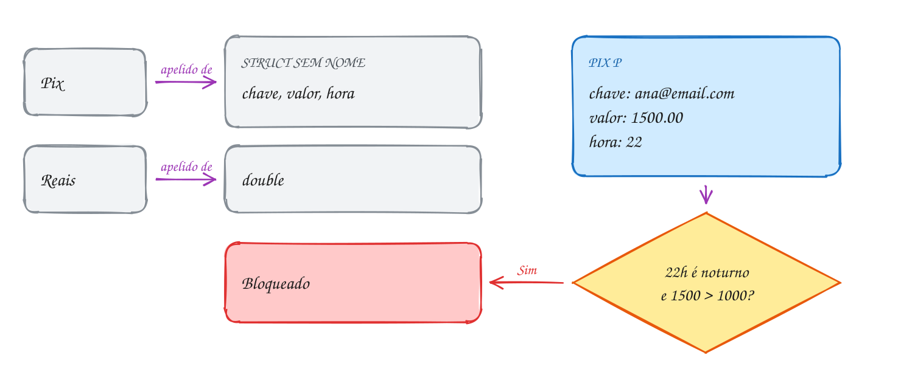
#include <stdbool.h>
#include <stdio.h>
typedef double Reais; // Reais é só outro nome para double
typedef struct { // struct sem nome, batizada de Pix pelo typedef
char chave[40];
Reais valor;
int hora; // 0 a 23
} Pix;
#define LIMITE_NOTURNO 1000.0
bool pix_permitido(Pix p) {
bool noturno = p.hora >= 20 || p.hora < 6;
return !(noturno && p.valor > LIMITE_NOTURNO);
}
int main(void) {
Pix p = {"ana@email.com", 1500.00, 22}; // sem a palavra struct
printf("Pix de R$ %.2f para %s às %dh\n", p.valor, p.chave, p.hora);
if (pix_permitido(p)) {
printf("Enviado!\n");
} else {
printf("Bloqueado: o limite noturno é R$ %.2f\n", LIMITE_NOTURNO);
}
return 0;
}
// Saída:
// Pix de R$ 1500.00 para ana@email.com às 22h
// Bloqueado: o limite noturno é R$ 1000.00
O Pix só é bloqueado se for horário noturno e o valor passar do limite:
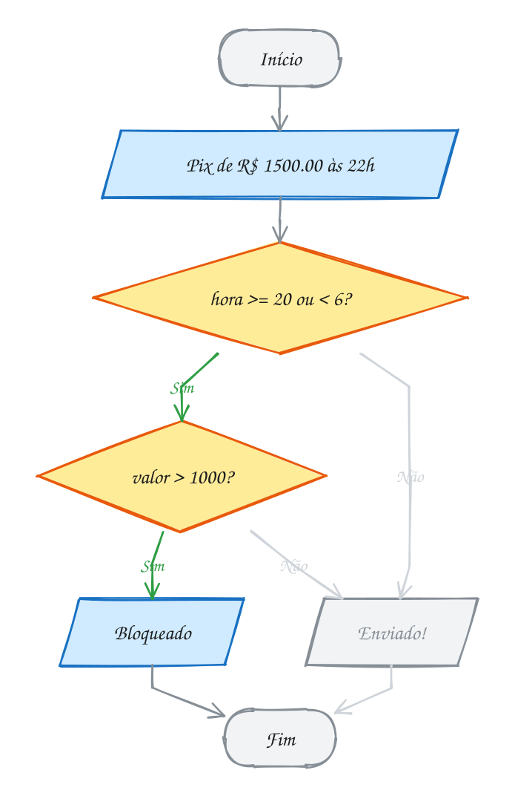
Exemplo A119 · A frota de ônibus
#include <stdio.h>
#include <string.h>
typedef char Placa[8]; // apelido para um vetor: Placa é "char[8]"
typedef unsigned Minutos; // apelido para um tipo simples
typedef struct onibus Onibus; // apelido antes da struct existir
struct onibus { // a struct com nome: dá para usar os dois nomes
Placa placa;
int linha;
Minutos atraso;
};
void mostrar(Onibus o) {
printf("Linha %d (%s): %u min de atraso\n", o.linha, o.placa, o.atraso);
}
int main(void) {
Onibus a = {"QWE1R23", 512, 0};
struct onibus b = {"RTY4U56", 307, 15}; // o nome completo também vale
Minutos tolerancia = 10;
mostrar(a);
mostrar(b);
if (b.atraso > tolerancia) {
printf("Linha %d passou da tolerância de %u min\n", b.linha, tolerancia);
}
Placa nova; // é um vetor de 8 char, como qualquer outro
strcpy(nova, "ZXC7V89"); // vetor: strcpy, não =
printf("Placa nova: %s, %zu bytes\n", nova, sizeof nova);
printf("Onibus ocupa %zu bytes, igual a struct onibus: %zu\n",
sizeof(Onibus), sizeof(struct onibus));
return 0;
}
// Saída:
// Linha 512 (QWE1R23): 0 min de atraso
// Linha 307 (RTY4U56): 15 min de atraso
// Linha 307 passou da tolerância de 10 min
// Placa nova: ZXC7V89, 8 bytes
// Onibus ocupa 16 bytes, igual a struct onibus: 16
gcc ~/LPEDC/material/A119.c -o ~/LPEDC/material/A119 && ~/LPEDC/material/A119
Exemplo A120 · A cor do site
#include <stdint.h>
#include <stdio.h>
typedef uint8_t Byte; // uint8_t já é um typedef (de unsigned char)
typedef struct {
Byte r, g, b; // cada canal de 0 a 255
} Cor;
Cor misturar(Cor a, Cor b) {
Cor m = {(a.r + b.r) / 2, (a.g + b.g) / 2, (a.b + b.b) / 2};
return m;
}
void mostrar(const char *nome, Cor c) {
printf("%-8s #%02X%02X%02X (%3d, %3d, %3d)\n", nome, c.r, c.g, c.b, c.r, c.g, c.b);
}
int main(void) {
Cor laranja = {255, 136, 0};
Cor branco = {255, 255, 255};
mostrar("laranja", laranja);
mostrar("branco", branco);
mostrar("mistura", misturar(laranja, branco));
printf("Uma Cor ocupa %zu bytes\n", sizeof(Cor));
return 0;
}
// Saída:
// laranja #FF8800 (255, 136, 0)
// branco #FFFFFF (255, 255, 255)
// mistura #FFC37F (255, 195, 127)
// Uma Cor ocupa 3 bytes
gcc ~/LPEDC/material/A120.c -o ~/LPEDC/material/A120 && ~/LPEDC/material/A120
Exercício E355 · ★☆☆
Crie com typedef o tipo Produto (nome até 19 letras, quantidade int e preco double). Escreva double subtotal(Produto p) e void mostrar(Produto p). No main, crie Café (3 unidades a R$ 12.50) e Leite (6 a R$ 4.99), mostre os dois e o total da compra.
Saída esperada:
Café: 3 x R$ 12.50 = R$ 37.50
Leite: 6 x R$ 4.99 = R$ 29.94
Total: R$ 67.44
Exercício E357 · ★★☆
Na receita de bolo você soma 1/4 de xícara com 1/6 de xícara. Crie o tipo Fracao (numerador e denominador inteiros) com typedef e escreva:
- Fracao simplificar(Fracao f): divide os dois pelo MDC;
- Fracao somar(Fracao a, Fracao b) e Fracao multiplicar(Fracao a, Fracao b),
que já devolvem a fração simplificada.
Saída esperada:
1/4 + 1/6 = 5/12
2/3 * 9/4 = 3/2
3/4 + 1/4 = 1/1
Exercício E358 · ★★☆
Crie com typedef o apelido Reais para double e o tipo Cartao (struct sem nome, com titular de até 19 letras e saldo em Reais). Escreva Cartao pagar(Cartao c, Reais valor), que devolve uma cópia do cartão com o valor descontado do saldo. Ana tem R$ 600.00 no vale-refeição e paga um almoço de R$ 36.50: mostre o saldo antes e depois.
Saída esperada:
Ana: R$ 600.00 -> R$ 563.50
Exercício E359 · ★★★
Ponteiro para função (assunto 0050) tem uma declaração difícil de ler: double (*f)(double, double). Com typedef ela fica limpa. Crie:
typedef double (*Operacao)(double, double);
e um tipo Botao (struct com um char simbolo e uma Operacao). Monte um vetor com os quatro botões de uma calculadora (+ - * /) e, num laço, aplique cada um aos números 12 e 4.
Saída esperada:
12 + 4 = 16
12 - 4 = 8
12 * 4 = 48
12 / 4 = 3
Uma struct guarda um time. Um campeonato tem vinte. Declarar Time t1, t2, t3... traz de volta o problema das variáveis soltas: não dá para percorrer
os times com um laço, nem achar o líder sem escrever vinte comparações. A
saída é juntar as duas ferramentas que você já conhece, o vetor e a struct.
Olhe a tabela do campeonato no jornal. Cada linha é um time, e todas as
linhas têm as mesmas colunas: nome, vitórias, empates, derrotas. Uma linha é
uma struct; a tabela inteira é um vetor de structs, um vetor em que cada
posição guarda uma struct completa. Time tabela[4]; declara quatro Time
seguidos na memória, com os bytes de cada struct guardados dentro do próprio
vetor, um time colado no outro (BACKES, 2013, cap. 8).
Para chegar a um dado, você escolhe primeiro a linha e depois a coluna:
tabela[2].nome. O índice vem antes do ponto, e o motivo está nos
tipos. tabela é um vetor; tabela[2] é um Time; e um Time tem o campo
nome. Já tabela.nome[2] não faz sentido, porque o vetor em si não tem
campos, só posições (BACKES, 2013, cap. 8). Lendo da esquerda para a direita,
cada operador entrega o tipo que o próximo espera.
A inicialização junta as duas sintaxes que você já viu: as chaves do vetor por fora e as chaves de cada struct por dentro (DEITEL; DEITEL, 2011, cap. 10):
Time tabela[] = {
{"Bahia", 8, 5, 3},
{"Flamengo", 9, 6, 1},
};
Repare que os colchetes ficaram vazios. Quando você não diz o tamanho, o
compilador conta os elementos da lista. Para o programa saber quantos são, use
a conta de sempre: sizeof tabela / sizeof tabela[0], o tamanho total do
vetor dividido pelo tamanho de um time. Com dois times de 32 bytes, dá 64 / 32
= 2 (DEITEL; DEITEL, 2011, cap. 10). Essa conta só funciona no mesmo bloco
em que o vetor foi declarado; dentro de uma função que o recebeu, ele já virou
ponteiro e o sizeof mede o ponteiro.
Uma posição do vetor é uma struct inteira, então tabela[i] = tabela[j]
copia o time todo de uma vez: nome, vitórias, empates e derrotas. Isso é o
que você quer na hora de ordenar a tabela. Para trocar dois times de lugar,
troque as structs com uma variável auxiliar do tipo Time, e não campo a
campo (BACKES, 2013, cap. 8). Se trocar só o nome, o Bahia fica com os
pontos do Flamengo.
Quando você procura um elemento, como o time com mais pontos, guarde o
índice dele, não uma cópia. O índice diz em que posição o líder está, e
com ele você pode mexer no time verdadeiro: tabela[lider].vitorias++ muda a
tabela. Uma cópia (Time melhor = tabela[i];) seria um time solto,
desligado do vetor; aumentar melhor.vitorias não altera nada na tabela.
Percorrer o vetor segue o mesmo padrão de qualquer vetor: um for de 0 até
n - 1, e em cada volta você lê os campos de tabela[i]. A diferença é que
agora cada elemento traz vários dados juntos, e o laço pode calcular algo com
eles, como os pontos (3 por vitória, 1 por empate).
[!WARNING] O C não confere limites:
tabela[4]num vetor de 4 times (índices 0 a 3) lê lixo ou derruba o programa, como num vetor deint. E ao ordenar, troque o time inteiro (tabela[i] = tabela[j]): trocar só o nome embaralha nomes e pontos.
Quatro times na tabela do campeonato. O programa calcula os pontos de cada um (3 por vitória, 1 por empate) e guarda o índice do melhor até agora. Palmeiras, no índice 2, termina na frente:
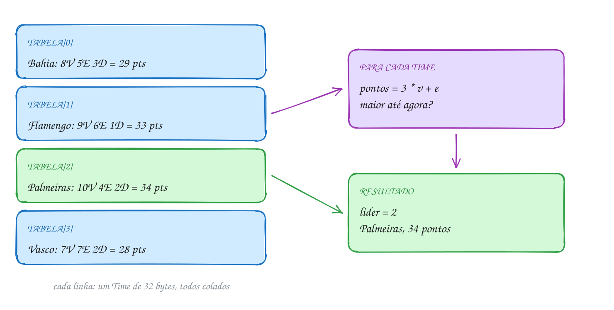
#include <stdio.h>
typedef struct {
char nome[20];
int vitorias;
int empates;
int derrotas;
} Time;
int pontos(Time t) {
return 3 * t.vitorias + t.empates;
}
int main(void) {
Time tabela[] = {
{"Bahia", 8, 5, 3},
{"Flamengo", 9, 6, 1},
{"Palmeiras", 10, 4, 2},
{"Vasco", 7, 7, 2},
};
int n = sizeof tabela / sizeof tabela[0]; // 4 times
int lider = 0; // índice do melhor até agora
for (int i = 0; i < n; i++) {
printf("%d. %-10s %2d pts\n", i, tabela[i].nome, pontos(tabela[i]));
if (pontos(tabela[i]) > pontos(tabela[lider])) {
lider = i;
}
}
printf("Líder: %s, com %d pontos\n", tabela[lider].nome, pontos(tabela[lider]));
printf("A tabela ocupa %zu bytes (%d x %zu)\n", sizeof tabela, n, sizeof(Time));
return 0;
}
// Saída:
// 0. Bahia 29 pts
// 1. Flamengo 33 pts
// 2. Palmeiras 34 pts
// 3. Vasco 28 pts
// Líder: Palmeiras, com 34 pontos
// A tabela ocupa 128 bytes (4 x 32)
É o padrão "maior até agora" do módulo de laços, comparando um valor calculado de cada struct:
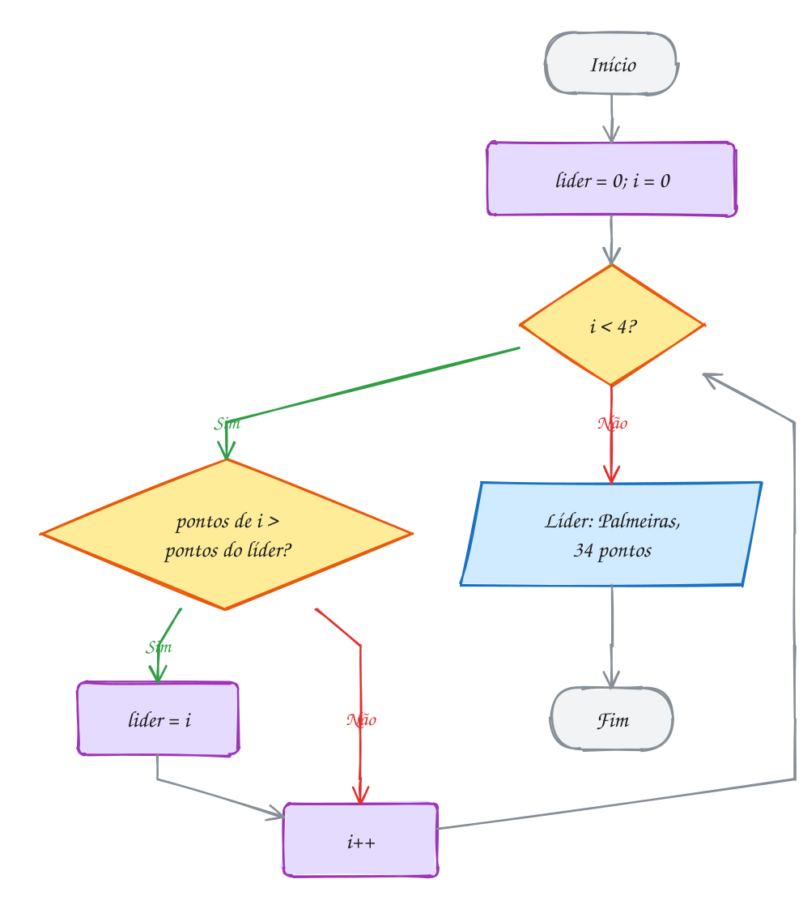
Exemplo A121 · O estoque da farmácia
#include <stdio.h>
#include <string.h>
typedef struct {
char nome[20];
int estoque;
int minimo; // abaixo disso, precisa repor
} Remedio;
// devolve o índice do remédio com esse nome, ou -1 se não achar
int buscar(const Remedio v[], int n, const char *nome) {
for (int i = 0; i < n; i++) {
if (strcmp(v[i].nome, nome) == 0) {
return i;
}
}
return -1;
}
void vender(Remedio v[], int n, const char *nome, int qtd) {
int i = buscar(v, n, nome);
if (i == -1) {
printf("%s: não temos\n", nome);
} else if (v[i].estoque < qtd) {
printf("%s: só restam %d\n", nome, v[i].estoque);
} else {
v[i].estoque -= qtd; // mexe direto no elemento do vetor
printf("%s: vendidas %d, restam %d\n", nome, qtd, v[i].estoque);
}
}
int main(void) {
Remedio farmacia[] = {
{"Dipirona", 40, 10},
{"Paracetamol", 12, 10},
{"Ibuprofeno", 5, 8},
};
int n = sizeof farmacia / sizeof farmacia[0];
vender(farmacia, n, "Paracetamol", 3);
vender(farmacia, n, "Ibuprofeno", 6);
vender(farmacia, n, "Amoxicilina", 1);
vender(farmacia, n, "Dipirona", 30);
printf("Repor:\n");
for (int i = 0; i < n; i++) {
if (farmacia[i].estoque < farmacia[i].minimo) { // 10 de 10 ainda não
printf(" %s (%d de %d)\n", farmacia[i].nome, farmacia[i].estoque,
farmacia[i].minimo);
}
}
return 0;
}
// Saída:
// Paracetamol: vendidas 3, restam 9
// Ibuprofeno: só restam 5
// Amoxicilina: não temos
// Dipirona: vendidas 30, restam 10
// Repor:
// Paracetamol (9 de 10)
// Ibuprofeno (5 de 8)
gcc ~/LPEDC/material/A121.c -o ~/LPEDC/material/A121 && ~/LPEDC/material/A121
Exemplo A122 · A classificação ordenada
#include <stdio.h>
#include <stdlib.h>
typedef struct {
char nome[20];
int vitorias;
int empates;
} Time;
int pontos(Time t) {
return 3 * t.vitorias + t.empates;
}
// qsort entrega ponteiros genéricos para dois elementos do vetor
int comparar(const void *a, const void *b) {
Time x = *(const Time *)a; // copia o time apontado
Time y = *(const Time *)b;
if (pontos(x) != pontos(y)) {
return pontos(y) - pontos(x); // mais pontos primeiro
}
return y.vitorias - x.vitorias; // desempate: mais vitórias
}
int main(void) {
Time tabela[] = {
{"Bahia", 8, 5},
{"Flamengo", 9, 6},
{"Palmeiras", 10, 4},
{"Fortaleza", 10, 3},
{"Vasco", 7, 7},
};
int n = sizeof tabela / sizeof tabela[0];
// qsort troca structs inteiras de lugar (28 bytes por vez)
qsort(tabela, n, sizeof tabela[0], comparar);
for (int i = 0; i < n; i++) {
printf("%dº %-10s %2d pts, %2d vitórias\n", i + 1, tabela[i].nome,
pontos(tabela[i]), tabela[i].vitorias);
}
return 0;
}
// Saída:
// 1º Palmeiras 34 pts, 10 vitórias
// 2º Fortaleza 33 pts, 10 vitórias
// 3º Flamengo 33 pts, 9 vitórias
// 4º Bahia 29 pts, 8 vitórias
// 5º Vasco 28 pts, 7 vitórias
gcc ~/LPEDC/material/A122.c -o ~/LPEDC/material/A122 && ~/LPEDC/material/A122
Exercício E361 · ★☆☆
Monte a lista de compras abaixo como um vetor de structs (nome, quantidade, preço unitário). Percorra o vetor mostrando o subtotal de cada item, o total da compra e o item que mais pesou no bolso.
Arroz 5kg 2 x R$ 27.90
Feijão 3 x R$ 8.49
Café 1 x R$ 18.90
Óleo 4 x R$ 7.99
Saída esperada:
Arroz 5kg: R$ 55.80
Feijão: R$ 25.47
Café: R$ 18.90
Óleo: R$ 31.96
Total: R$ 132.13
Mais caro: Arroz 5kg
Exercício E363 · ★★☆
Leia do teclado 3 atletas: o nome (pode ter espaço) numa linha e, na linha seguinte, a altura e a idade. Não mostre mensagens antes de ler. Guarde num vetor de structs e mostre o mais alto e o mais velho.
Entrada:
Rebeca Andrade
1.55 26
Darlan Romani
1.88 34
Rayssa Leal
1.50 17
Saída esperada:
Mais alto: Darlan Romani (1.88 m)
Mais velho: Darlan Romani (34 anos)
Exercício E364 · ★★☆
Uma loja tem estes celulares em estoque:
Moto G R$ 1299.00
Galaxy A R$ 1899.00
iPhone R$ 5499.00
Redmi R$ 999.00
Use qsort (assunto 0050) duas vezes: primeiro em ordem alfabética do nome, depois do mais caro para o mais barato. Mostre a lista após cada ordenação.
Saída esperada:
Por nome:
Galaxy A R$ 1899.00
Moto G R$ 1299.00
Redmi R$ 999.00
iPhone R$ 5499.00
Por preço:
iPhone R$ 5499.00
Galaxy A R$ 1899.00
Moto G R$ 1299.00
Redmi R$ 999.00
Exercício E366 · ★★★
Um terreno irregular tem 5 cantos, em metros, dados em ordem (dando a volta no terreno):
(0, 0) (6, 0) (6, 4) (3, 7) (0, 4)
Guarde os cantos num vetor de struct Ponto e calcule a área e o perímetro. Para a área, use a fórmula do cadarço (shoelace): some x[i] * y[j] - x[j] * y[i] para cada canto i, com j sendo o canto seguinte, e divida o valor absoluto da soma por 2. O canto seguinte ao último é o primeiro.
Saída esperada:
Área: 33.00 m2
Perímetro: 22.49 m
gcc ~/LPEDC/material/E366.c -o ~/LPEDC/material/E366 -lm && ~/LPEDC/material/E366
Você passa o cartão do ônibus na catraca e o validador desconta R$ 4,40. Ele mexe no saldo do cartão de verdade. Se descontasse numa cópia do cartão, o seu saldo nunca baixaria e você andaria de graça para sempre. Quando uma função precisa mudar uma struct, ela enfrenta esse mesmo problema.
Em C, todo parâmetro vai por valor, e com struct não é diferente: a
função recebe uma cópia de todos os bytes da struct, e o que ela muda fica na
cópia. A struct de quem chamou continua igual. Para a função alterar o
original, passe o endereço da struct, um ponteiro do tipo Cartao *
(DEITEL; DEITEL, 2011, cap. 10). A cópia agora é do endereço, e um endereço
copiado ainda aponta para o mesmo cartão.
Com o ponteiro c em mãos, você chega a um campo em dois passos. *c segue
o endereço e entrega a struct; .saldo escolhe o campo. Juntos, ficam
(*c).saldo. Os parênteses são obrigatórios porque o ponto tem prioridade
maior que o *. Sem eles, *c.saldo seria lido como *(c.saldo), e c é
um ponteiro, que não tem campo nenhum: o compilador recusa (FEOFILOFF, 2009,
ap. E).
Como esse caso aparece o tempo todo, o C tem um atalho, a seta ->.
c->saldo quer dizer exatamente o mesmo que (*c).saldo. A regra de uso
cabe numa frase: variável struct usa ponto (cartao.saldo); ponteiro para
struct usa seta (c->saldo) (BACKES, 2013, cap. 8). Se você errar, o
compilador avisa que o operando da seta não é ponteiro, ou que o do ponto
é.
O ponteiro também abre a porta do heap, a área de memória que você pede
com malloc e devolve com free, vista no módulo 07. Cartao *c = malloc(sizeof *c); reserva um Cartao inteiro e guarda o endereço em c.
O sizeof *c mede o tipo para o qual c aponta; se um dia o tipo mudar, a
conta acompanha sozinha. Como em todo malloc, confira se voltou NULL
antes de usar e chame free(c) quando terminar (CELES; RANGEL, 2002).
A struct no heap resolve outro problema: o tempo de vida. Uma struct
declarada dentro de uma função é local e deixa de existir no return.
Devolver o endereço dela (return &cartao;) entrega um endereço de memória
que já foi liberada. Quem precisa sobreviver à função vai para o heap, ou é
devolvido por valor, como cópia.
Há ainda a questão do custo. Passar por valor copia a struct a cada
chamada. Um Cartao de 48 bytes pouco pesa, mas uma struct com
double leituras[1000] copia 8016 bytes toda vez, contra os 8 bytes de um
ponteiro. Por isso struct grande anda por ponteiro mesmo quando a função só
precisa ler. Nesse caso, escreva const Cartao *c: o const avisa a quem lê
que a função não altera nada, e faz o compilador barrar uma alteração por
engano (CELES; RANGEL, 2002).
[!WARNING]
void recarregar(Cartao c, double v) { c.saldo += v; }compila, roda e não faz nada: recarrega uma cópia. PasseCartao *ce escrevac->saldo += v. Outros dois erros comuns:*c.saldonão compila (usec->saldo), ereturn &cartao;de uma struct local devolve um endereço que morre noreturn.
O cartão de ônibus da Luana mora no heap com R$ 10,00, e cada passagem custa
R$ 4,40. cobrar_passagem recebe uma cópia do endereço, não do cartão: as
duas setas apontam para o mesmo lugar:
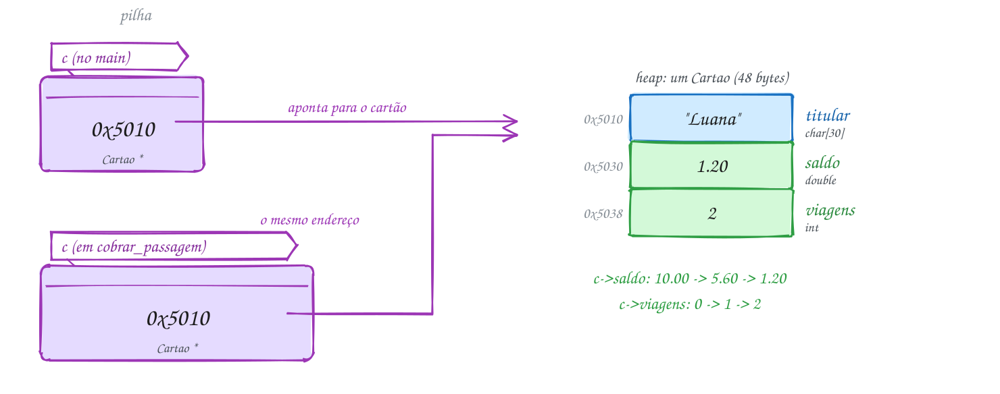
#include <stdbool.h>
#include <stdio.h>
#include <stdlib.h>
#include <string.h>
#define TARIFA 4.40
typedef struct {
char titular[30];
double saldo;
int viagens;
} Cartao;
// recebe o ENDEREÇO do cartão: mexe no original, não numa cópia
bool cobrar_passagem(Cartao *c) {
if (c->saldo < TARIFA) { // c->saldo é o mesmo que (*c).saldo
return false;
}
c->saldo -= TARIFA;
c->viagens++;
return true;
}
int main(void) {
Cartao *c = malloc(sizeof *c); // um Cartao inteiro no heap
if (c == NULL) {
return 1;
}
strcpy(c->titular, "Luana");
c->saldo = 10.00;
c->viagens = 0;
for (int i = 1; i <= 3; i++) {
if (cobrar_passagem(c)) {
printf("Viagem %d: liberada, saldo R$ %.2f\n", i, c->saldo);
} else {
printf("Viagem %d: saldo insuficiente (R$ %.2f)\n", i, c->saldo);
}
}
printf("%s fez %d viagens\n", c->titular, c->viagens);
free(c);
return 0;
}
// Saída:
// Viagem 1: liberada, saldo R$ 5.60
// Viagem 2: liberada, saldo R$ 1.20
// Viagem 3: saldo insuficiente (R$ 1.20)
// Luana fez 2 viagens
O teste de mesa das três chamadas, olhando o cartão no heap:
| Chamada | saldo antes | saldo < 4.40? | saldo depois | viagens |
|---|---|---|---|---|
| 1ª | 10.00 | não | 5.60 | 1 |
| 2ª | 5.60 | não | 1.20 | 2 |
| 3ª | 1.20 | sim: devolve false | 1.20 | 2 |
A pergunta do saldo fica na função, mas o laço das três chamadas é do main.
Cada volta enxerga o saldo da anterior:
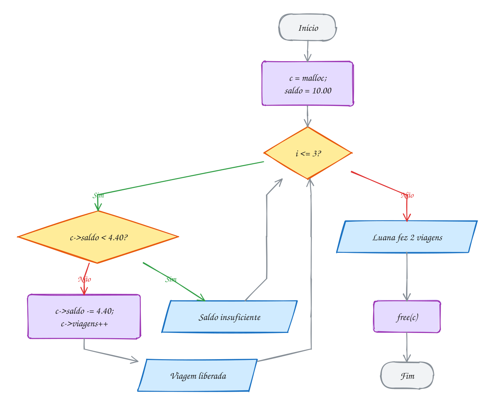
Exemplo A123 · As comandas do bar
#include <stdio.h>
#include <stdlib.h>
typedef struct {
int mesa;
double total;
int itens;
} Comanda;
// cria um vetor de comandas no heap e devolve o endereço (NULL se falhar)
Comanda *abrir_comandas(int n) {
Comanda *v = malloc(n * sizeof *v);
if (v == NULL) {
return NULL;
}
for (int i = 0; i < n; i++) {
v[i] = (Comanda){i + 1, 0.0, 0}; // mesas 1, 2, 3...
}
return v;
}
void lancar(Comanda *c, double preco) {
c->total += preco;
c->itens++;
}
// devolve um ponteiro para a comanda mais cara: sem copiar nenhuma
const Comanda *mais_cara(const Comanda *v, int n) {
const Comanda *m = &v[0];
for (int i = 1; i < n; i++) {
if (v[i].total > m->total) {
m = &v[i];
}
}
return m;
}
int main(void) {
int n = 3;
Comanda *bar = abrir_comandas(n);
if (bar == NULL) {
return 1;
}
lancar(&bar[0], 12.00); // chope na mesa 1
lancar(&bar[2], 35.90); // porção na mesa 3
lancar(&bar[0], 12.00);
lancar(bar + 1, 8.50); // bar + 1 é o mesmo que &bar[1]
// o ponteiro anda de comanda em comanda: p++ pula sizeof(Comanda) bytes
for (Comanda *p = bar; p < bar + n; p++) {
printf("Mesa %d: %d itens, R$ %.2f\n", p->mesa, p->itens, p->total);
}
const Comanda *top = mais_cara(bar, n);
printf("Maior conta: mesa %d\n", top->mesa);
free(bar); // depois disso, top também fica solto: não use mais
return 0;
}
// Saída:
// Mesa 1: 2 itens, R$ 24.00
// Mesa 2: 1 itens, R$ 8.50
// Mesa 3: 1 itens, R$ 35.90
// Maior conta: mesa 3
gcc ~/LPEDC/material/A123.c -o ~/LPEDC/material/A123 && ~/LPEDC/material/A123
Exemplo A124 · O preço da cópia
#include <stdio.h>
typedef struct {
char placa[8];
double leituras[1000]; // velocidades registradas pelo radar
int n;
} Radar;
// por valor: a função recebe uma CÓPIA dos 8016 bytes
void zerar_copia(Radar r) {
r.n = 0; // zera a cópia; o original não muda
printf(" dentro de zerar_copia: sizeof r = %zu\n", sizeof r);
}
// por ponteiro: a função recebe só um endereço (8 bytes)
void zerar(Radar *r) {
r->n = 0;
printf(" dentro de zerar: sizeof r = %zu\n", sizeof r);
}
// const: só lê; o compilador barra qualquer tentativa de alterar
double maior(const Radar *r) {
double m = r->leituras[0];
for (int i = 1; i < r->n; i++) {
if (r->leituras[i] > m) {
m = r->leituras[i];
}
}
return m;
}
int main(void) {
Radar r = {"ABC1D23", {62.5, 71.0, 58.3}, 3}; // o resto das leituras vira 0
printf("Maior velocidade: %.1f km/h\n", maior(&r));
zerar_copia(r);
printf("Depois de zerar_copia: n = %d\n", r.n);
zerar(&r);
printf("Depois de zerar: n = %d\n", r.n);
return 0;
}
// Saída:
// Maior velocidade: 71.0 km/h
// dentro de zerar_copia: sizeof r = 8016
// Depois de zerar_copia: n = 3
// dentro de zerar: sizeof r = 8
// Depois de zerar: n = 0
gcc ~/LPEDC/material/A124.c -o ~/LPEDC/material/A124 && ~/LPEDC/material/A124
Exercício E367 · ★☆☆
A empresa deu 8% de reajuste. Crie o tipo Funcionario (nome e salário) e escreva duas funções:
- void reajustar(Funcionario *f, double pct): aumenta o salário do
funcionário original;
- void mostrar(const Funcionario *f): só mostra (por isso o const).
Aplique o reajuste em Ana (R$ 3200.00) e Beto (R$ 4100.00).
Saída esperada:
Ana: R$ 3200.00
Beto: R$ 4100.00
Depois do reajuste:
Ana: R$ 3456.00
Beto: R$ 4428.00
Exercício E369 · ★★☆
Crie o tipo Conta (titular e saldo) e três funções:
- Conta *conta_criar(const char *titular, double saldo): aloca com malloc,
preenche e devolve (NULL se faltar memória);
- bool transferir(Conta *de, Conta *para, double valor): só transfere se
houver saldo, e devolve se deu certo;
- void conta_destruir(Conta *c): libera.
Crie Ana com R$ 500.00 e Beto com R$ 120.00. Transfira R$ 200.00 de Ana para Beto e depois R$ 400.00 de Beto para Ana.
Saída esperada:
Ana -> Beto, R$ 200.00: ok
Beto -> Ana, R$ 400.00: saldo insuficiente
Ana: R$ 300.00 | Beto: R$ 320.00
Exercício E370 · ★★☆
Escreva Produto *criar_produto(const char *nome, double preco), que aloca com malloc um Produto (struct com nome de até 29 letras e preco double), preenche e devolve o ponteiro (NULL se faltar memória). No main, crie o fone abaixo, mostre e libere com free.
Saída esperada:
Fone Bluetooth: R$ 149.90
Exercício E371 · ★★★
Leia produtos (nome sem espaço e preço) até a entrada acabar, guardando num vetor de structs no heap que começa com capacidade 2 e dobra com realloc quando enche. Mostre cada vez que a capacidade crescer e, no fim, a lista e o total.
Entrada:
Arroz 27.90
Feijao 8.49
Cafe 18.90
Oleo 7.99
Acucar 4.59
Saída esperada:
capacidade: 2 -> 4
capacidade: 4 -> 8
5 produtos:
Arroz R$ 27.90
Feijao R$ 8.49
Cafe R$ 18.90
Oleo R$ 7.99
Acucar R$ 4.59
Total: R$ 67.87
O app de delivery mostra o pedido em quatro etapas, sempre nesta ordem:
recebido, em preparo, saiu para entrega, entregue. O programa precisa guardar
em que etapa cada pedido está. Com números soltos (0, 1, 2, 3), daqui a um mês
ninguém lembra o que quer dizer if (status == 2). Com strings, cada
comparação pede um strcmp, que é lento, e um erro de digitação como
"entrege" passa sem nenhum aviso.
Pense nas etapas de um processo num painel de senhas: cada etapa tem um nome para quem lê e um número para a máquina. O enum (enumeração) faz isso: é uma lista de constantes inteiras com nome, em que você escreve o nome e o compilador usa o número (BACKES, 2013, cap. 8):
typedef enum { RECEBIDO, PREPARANDO, A_CAMINHO, ENTREGUE } Status;
A linha cria o tipo Status (com o typedef do assunto anterior) e quatro
constantes. Agora o código diz if (s == A_CAMINHO), e quem lê entende na
hora. Uma variável Status s = RECEBIDO; guarda a etapa de um pedido.
Os valores seguem uma regra fixa. O primeiro nome vale 0, e cada um vale o
anterior mais 1: RECEBIDO é 0, PREPARANDO é 1, A_CAMINHO é 2 e
ENTREGUE é 3. Se precisar de outros números, escolha: em
enum { DEZ = 10, ONZE, VINTE = 20 }, ONZE vale 11, porque o nome sem
valor continua a contagem do anterior (DEITEL; DEITEL, 2011, cap. 10). Por
convenção, os nomes ficam em MAIÚSCULAS, como as constantes do #define.
Por baixo, o enum é só um inteiro com apelido. Na compilação, A_CAMINHO
vira o número 2, e uma variável Status ocupa o mesmo espaço que um int
(BACKES, 2013, cap. 8). Por isso o compilador deixa fazer contas com ela:
somar, comparar com <, avançar com s++. É prático para andar pelas
etapas em ordem, e é também a origem do perigo do alerta abaixo.
Se o enum vira número, por que não usar #define RECEBIDO 0? Porque o
#define é só troca de texto antes da compilação, e o enum o compilador
conhece como tipo. Isso aparece no switch: quando cada case usa um nome
do enum e você esquece um deles, o -Wall avisa enumeration value 'ENTREGUE' not handled in switch. O aviso só aparece se o switch não tiver
default, porque o default cobre os casos que faltam (DEITEL; DEITEL,
2011, cap. 10).
Um truque útil é pôr no fim um nome que só conta os outros:
{ RECEBIDO, PREPARANDO, A_CAMINHO, ENTREGUE, QTD_STATUS }. Como a contagem
começa em 0, QTD_STATUS vale 4, exatamente o número de etapas. Ele serve de
tamanho para um vetor de textos, const char *nomes[QTD_STATUS], e o vetor
cresce sozinho se você acrescentar uma etapa antes dele.
Os nomes de um enum valem no arquivo todo, não só dentro do enum. Dois enums
diferentes não podem ter um nome igual, e por isso projetos maiores usam
prefixo: STATUS_ENTREGUE, PAG_PIX.
[!WARNING] O C não confere se o valor de um enum é válido.
Status s = 42;compila, es++depois deENTREGUEdá 4, que não é etapa nenhuma. Quem traduz o enum para texto precisa de uma saída para valor inválido depois doswitch. E dois enums comENTREGUEnão compilam: use prefixo.
O pedido no app de delivery passa por quatro etapas. A variável s começa em
RECEBIDO e anda uma etapa por vez, com s++:
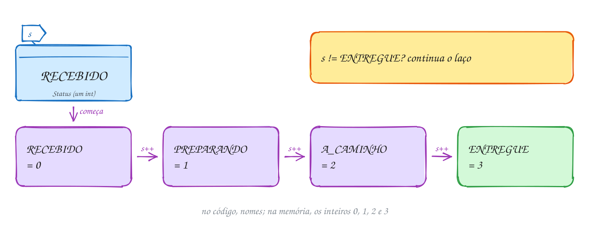
#include <stdio.h>
typedef enum {
RECEBIDO, // 0
PREPARANDO, // 1
A_CAMINHO, // 2
ENTREGUE // 3
} Status;
const char *nome_status(Status s) {
switch (s) {
case RECEBIDO:
return "recebido pelo restaurante";
case PREPARANDO:
return "em preparo";
case A_CAMINHO:
return "saiu para entrega";
case ENTREGUE:
return "entregue";
}
return "desconhecido"; // só chega aqui com um valor inválido
}
int main(void) {
Status s = RECEBIDO;
while (s != ENTREGUE) {
printf("[%d] Pedido %s\n", s, nome_status(s));
s++; // enum é um inteiro: avança para o próximo status
}
printf("[%d] Pedido %s. Bom apetite!\n", s, nome_status(s));
return 0;
}
// Saída:
// [0] Pedido recebido pelo restaurante
// [1] Pedido em preparo
// [2] Pedido saiu para entrega
// [3] Pedido entregue. Bom apetite!
O laço é comum, controlado por uma pergunta sobre o enum, e o s++ faz o
pedido andar:
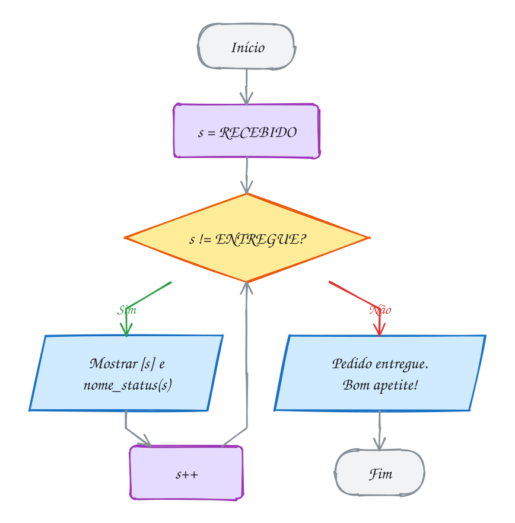
Exemplo A125 · As formas de pagamento
#include <stdio.h>
// prefixo PAG_ evita choque de nomes; QTD_PAG conta quantas formas existem
typedef enum { PAG_PIX, PAG_DEBITO, PAG_CREDITO, PAG_DINHEIRO, QTD_PAG } Pagamento;
typedef struct {
double valor;
Pagamento forma; // um enum dentro de uma struct
} Venda;
int main(void) {
// vetores do tamanho do enum, indexados pelo próprio enum
const char *nomes[QTD_PAG] = {"Pix", "débito", "crédito", "dinheiro"};
const double taxa[QTD_PAG] = {0.0, 1.5, 3.2, 0.0}; // % que a maquininha cobra
Venda vendas[] = {
{50.00, PAG_PIX},
{120.00, PAG_CREDITO},
{35.00, PAG_DEBITO},
{80.00, PAG_PIX},
{20.00, 7}, // compila! o C não confere se 7 é uma forma válida
};
int n = sizeof vendas / sizeof vendas[0];
int contagem[QTD_PAG] = {0};
double taxas = 0;
for (int i = 0; i < n; i++) {
Pagamento f = vendas[i].forma;
if (f < 0 || f >= QTD_PAG) { // quem confere é você
printf("venda %d: forma inválida (%d)\n", i, f);
continue;
}
contagem[f]++;
taxas += vendas[i].valor * taxa[f] / 100;
}
for (Pagamento f = PAG_PIX; f < QTD_PAG; f++) {
printf("%s: %d venda(s)\n", nomes[f], contagem[f]);
}
printf("Taxas pagas: R$ %.2f\n", taxas);
return 0;
}
// Saída:
// venda 4: forma inválida (7)
// Pix: 2 venda(s)
// débito: 1 venda(s)
// crédito: 1 venda(s)
// dinheiro: 0 venda(s)
// Taxas pagas: R$ 4.37
gcc ~/LPEDC/material/A125.c -o ~/LPEDC/material/A125 && ~/LPEDC/material/A125
Exemplo A126 · O troco em notas
#include <stdio.h>
// cada nome vale o que está escrito na nota: os valores não precisam ser seguidos
typedef enum {
DOIS = 2,
CINCO = 5,
DEZ = 10,
VINTE = 20,
CINQUENTA = 50,
CEM = 100,
} Nota;
int main(void) {
const Nota notas[] = {CEM, CINQUENTA, VINTE, DEZ, CINCO, DOIS};
int n = sizeof notas / sizeof notas[0];
int troco = 137;
printf("Troco de R$ %d:\n", troco);
for (int i = 0; i < n; i++) {
int qtd = troco / notas[i];
if (qtd > 0) {
printf(" %d nota(s) de R$ %d\n", qtd, notas[i]);
troco %= notas[i];
}
}
if (troco > 0) {
printf(" sobrou R$ %d sem nota\n", troco);
}
printf("sizeof(Nota) = %zu bytes\n", sizeof(Nota));
return 0;
}
// Saída:
// Troco de R$ 137:
// 1 nota(s) de R$ 100
// 1 nota(s) de R$ 20
// 1 nota(s) de R$ 10
// 1 nota(s) de R$ 5
// 1 nota(s) de R$ 2
// sizeof(Nota) = 4 bytes
gcc ~/LPEDC/material/A126.c -o ~/LPEDC/material/A126 && ~/LPEDC/material/A126
Exercício E373 · ★☆☆
Declare o enum abaixo, com alguns valores escolhidos e outros não:
enum Tamanho { P = 1, M, G, GG = 10, XG, XXG = GG * 2, ESP };
Guarde os sete tamanhos num vetor e os nomes deles num vetor de textos, e mostre um por linha, num laço. Depois guarde G + XG numa variável enum Tamanho e mostre: o C deixa, mesmo que somar tamanhos não faça sentido.
Saída esperada:
P = 1
M = 2
G = 3
GG = 10
XG = 11
XXG = 20
ESP = 21
G + XG = 14
Exercício E375 · ★★☆
Jokenpô! Crie os enums Jogada { PEDRA, PAPEL, TESOURA } e Resultado { EMPATE, VITORIA, DERROTA }. Escreva Resultado jogar(Jogada voce, Jogada outro) e rode as 5 partidas abaixo, mostrando o placar no fim.
voce x outro
pedra x tesoura
papel x tesoura
tesoura x tesoura
papel x pedra
pedra x papel
Saída esperada:
pedra x tesoura: vitória
papel x tesoura: derrota
tesoura x tesoura: empate
papel x pedra: vitória
pedra x papel: derrota
Placar: 2 vitórias, 1 empate, 2 derrotas
Exercício E376 · ★★☆
Crie o enum Naipe { OUROS, ESPADAS, COPAS, PAUS } e a função const char *nome_naipe(Naipe n), com um switch que tem um case para cada naipe e nenhum default (assim o gcc avisa se um naipe for esquecido). O "???" é devolvido depois do switch, só para valores inválidos. No main, um laço mostra o 7 de cada naipe.
Saída esperada:
7 de ouros
7 de espadas
7 de copas
7 de paus
Exercício E377 · ★★★
A catraca do metrô é uma máquina de estados. Ela está TRAVADA ou LIBERADA, e recebe dois eventos: BILHETE e EMPURRAO. As regras:
TRAVADA + BILHETE -> LIBERADA
TRAVADA + EMPURRAO -> TRAVADA (alguém tentou passar sem pagar)
LIBERADA + EMPURRAO -> TRAVADA (uma pessoa passou)
LIBERADA + BILHETE -> LIBERADA (bilhete desperdiçado)
Use dois enums (Estado e Evento) e uma função Estado transicao(Estado e, Evento ev). Começando TRAVADA, processe a sequência BILHETE, EMPURRAO, EMPURRAO, BILHETE, BILHETE, EMPURRAO, EMPURRAO e conte quantos passaram, quantas tentativas foram barradas e quantos bilhetes foram desperdiçados.
Saída esperada:
travada + bilhete -> liberada
liberada + empurrão -> travada
travada + empurrão -> travada
travada + bilhete -> liberada
liberada + bilhete -> liberada
liberada + empurrão -> travada
travada + empurrão -> travada
Passaram: 2 | Barrados: 2 | Bilhetes desperdiçados: 1
Um pagamento numa loja é feito por Pix, ou por cartão, ou por boleto. Nunca pelos três ao mesmo tempo. Se você guardar isso numa struct com os dados dos três meios, cada pagamento carrega dois terços de espaço que nunca vai usar. Às vezes o problema é o contrário: você quer pegar os mesmos bytes da memória e lê-los de dois jeitos, como um número inteiro e como uma sequência de bytes soltos.
Pense numa mesa de coworking. De manhã ela serve a uma designer; à tarde, a um programador. O espaço é um só, e quando um chega, o que o outro deixou em cima sai do lugar. A union (união) faz isso com a memória. Ela se declara igual à struct, mas todos os campos começam no mesmo endereço e dividem os mesmos bytes, então só um campo guarda um valor com sentido por vez (BACKES, 2013, cap. 8).
typedef union {
uint32_t numero; // 4 bytes
unsigned char bytes[4]; // os MESMOS 4 bytes
} Endereco;
Compare com a struct. Na struct, cada campo tem o seu pedaço, um depois do
outro, e o tamanho é a soma (mais o preenchimento). Na union, os campos se
sobrepõem, e o tamanho é o do maior campo, arredondado ao alinhamento
(DEITEL; DEITEL, 2011, cap. 10). Em Endereco, os dois campos têm 4 bytes, e
sizeof(Endereco) dá 4, não 8.
Daí saem os dois usos da union (KERNIGHAN; RITCHIE, 1988, cap. 6). O
primeiro é economizar espaço quando o dado é uma coisa ou outra, como o
pagamento. O segundo é olhar os mesmos bytes de dois jeitos: você grava
numero e lê bytes[0], bytes[1]... sem fazer conta de divisão e resto. A
union não gera código para isso. ip.numero e ip.bytes[0] estão no mesmo
endereço; o que muda é só o tipo com que o programa lê aqueles bytes.
No primeiro uso aparece uma dificuldade: olhando a union, como saber qual campo foi gravado por último? A união sozinha não guarda essa informação. A solução é a union etiquetada: uma struct com um enum que diz qual campo vale (a etiqueta) e, ao lado, a union com os dados. Antes de ler, o programa olha a etiqueta. Quem confere é você; o compilador não verifica nada (KERNIGHAN; RITCHIE, 1988, cap. 6).
O segundo uso revela um detalhe da máquina. O IP 192.168.0.10 é, por baixo,
um número de 32 bits: 0xC0A8000A (C0 = 192, A8 = 168, 00 = 0, 0A = 10).
Grave esse número em ip.numero e leia ip.bytes num PC comum: os bytes
saem 0A 00 A8 C0, de trás para frente. A ordem em que os bytes de um número
ficam na memória se chama endianness. No little-endian (Intel, AMD e
quase todo ARM), o byte menos significativo fica no endereço menor, por
isso o 0A do final vem primeiro. No big-endian, a ordem é a mesma da
leitura humana, C0 A8 00 0A (LINUX MAN PAGES, s.d.). Nenhuma das duas é a
certa: é uma escolha de quem projetou o processador.
A diferença importa quando dois computadores trocam números. A rede usa
big-endian, e as funções htonl e ntohl, de <arpa/inet.h>, convertem um
número de 32 bits da ordem da máquina para a da rede e de volta (LINUX MAN
PAGES, s.d.). Numa máquina big-endian elas não fazem nada; numa
little-endian, invertem os bytes.
[!WARNING] Numa union, escrever num campo estraga os outros. Numa union para economizar espaço, ler um campo diferente do último gravado dá lixo, e o C não avisa: guarde um enum com a etiqueta e confira antes de ler. E ler os bytes de um número depende da endianness: a saída muda entre máquinas.
O IP 192.168.0.10 é um número de 32 bits, 0xC0A8000A. O programa grava em
ip.numero e lê por ip.bytes; repare na ordem dos bytes na memória:
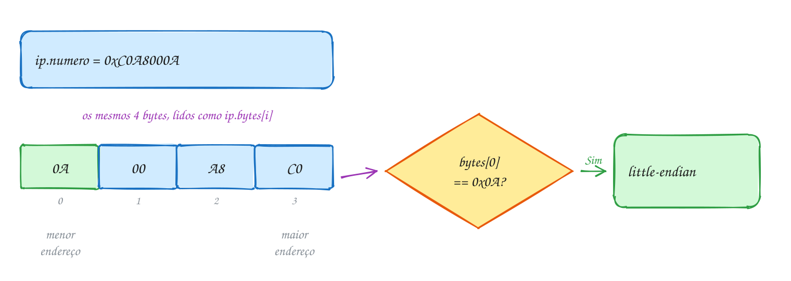
#include <stdint.h>
#include <stdio.h>
// os dois campos começam no MESMO endereço: são dois jeitos de ler 4 bytes
typedef union {
uint32_t numero;
unsigned char bytes[4];
} Endereco;
int main(void) {
Endereco ip;
ip.numero = 0xC0A8000A; // 192.168.0.10, escrito como um número só
printf("sizeof: %zu bytes\n", sizeof ip);
printf("numero: 0x%08X\n", (unsigned)ip.numero);
printf("bytes na memória:");
for (int i = 0; i < 4; i++) {
printf(" %02X", ip.bytes[i]); // lê os mesmos 4 bytes, um por um
}
printf("\n");
if (ip.bytes[0] == 0x0A) {
printf("little-endian: o byte menos significativo vem primeiro\n");
} else {
printf("big-endian: o byte mais significativo vem primeiro\n");
}
ip.bytes[3] = 10; // muda um byte: o número inteiro muda junto
printf("depois de bytes[3] = 10: 0x%08X\n", (unsigned)ip.numero);
return 0;
}
// Saída (num PC Intel/AMD ou ARM):
// sizeof: 4 bytes
// numero: 0xC0A8000A
// bytes na memória: 0A 00 A8 C0
// little-endian: o byte menos significativo vem primeiro
// depois de bytes[3] = 10: 0x0AA8000A
A pergunta sobre o primeiro byte detecta a endianness. Numa máquina big-endian, o mesmo programa seguiria pelo outro lado:
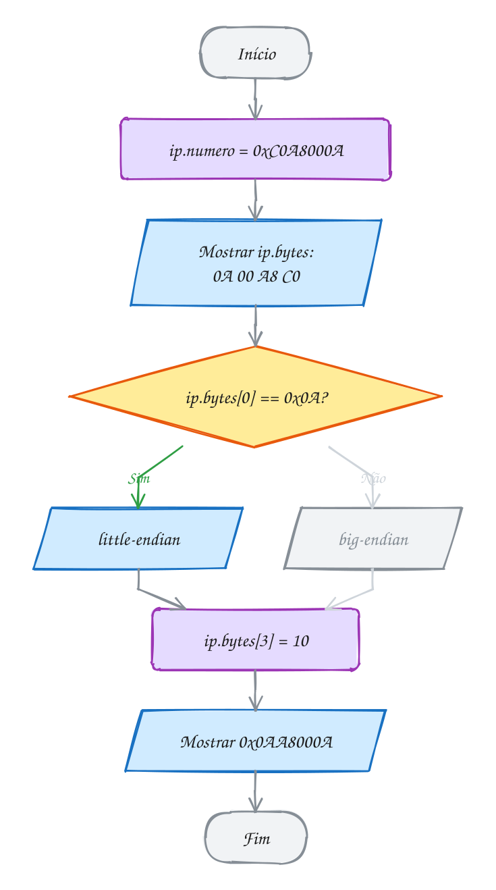
Exemplo A127 · A balança da feira
#include <stdio.h>
// um produto da feira é vendido por unidade OU por quilo, nunca pelos dois
typedef union {
int unidades;
double quilos;
} Quantidade;
// a mesma informação numa struct: os dois campos ocupam espaço sempre
typedef struct {
int unidades;
double quilos;
} QuantidadeStruct;
int main(void) {
Quantidade q;
q.unidades = 12; // uma dúzia de ovos
printf("unidades: %d\n", q.unidades);
q.quilos = 2.5; // agora 2,5 kg de tomate: os mesmos bytes, reescritos
printf("quilos: %.1f\n", q.quilos);
// 2.5 em double é 0x4004000000000000; num PC little-endian, os 4 bytes
// que o int lê são os de baixo, todos zero
printf("unidades agora: %d (lixo: a dúzia sumiu)\n", q.unidades);
printf("union: %zu bytes, struct: %zu bytes\n", sizeof(Quantidade),
sizeof(QuantidadeStruct));
printf("1000 produtos: %zu contra %zu bytes\n", 1000 * sizeof(Quantidade),
1000 * sizeof(QuantidadeStruct));
printf("mesmo endereço? %s\n", (void *)&q.unidades == (void *)&q.quilos ? "sim" : "não");
return 0;
}
// Saída (num PC Intel/AMD ou ARM):
// unidades: 12
// quilos: 2.5
// unidades agora: 0 (lixo: a dúzia sumiu)
// union: 8 bytes, struct: 16 bytes
// 1000 produtos: 8000 contra 16000 bytes
// mesmo endereço? sim
gcc ~/LPEDC/material/A127.c -o ~/LPEDC/material/A127 && ~/LPEDC/material/A127
Exemplo A128 · Um pagamento, três formas
#include <stdio.h>
typedef enum { PIX, CARTAO, BOLETO } TipoPagamento;
// union "etiquetada": o enum diz qual campo da union vale agora
typedef struct {
TipoPagamento tipo;
double valor;
union {
char chave[40]; // PIX
struct { // CARTAO
char final[5];
int parcelas;
} cartao;
char codigo[48]; // BOLETO
} dados;
} Pagamento;
void mostrar(const Pagamento *p) {
printf("R$ %7.2f via ", p->valor);
switch (p->tipo) {
case PIX:
printf("Pix para %s\n", p->dados.chave);
break;
case CARTAO:
printf("cartão final %s em %dx\n", p->dados.cartao.final, p->dados.cartao.parcelas);
break;
case BOLETO:
printf("boleto %.10s...\n", p->dados.codigo);
break;
}
}
int main(void) {
Pagamento lista[] = {
{PIX, 89.90, .dados.chave = "loja@exemplo.com"},
{CARTAO, 1250.00, .dados.cartao = {"4321", 10}},
{BOLETO, 342.17, .dados.codigo = "23790123456789012345678901234567890123456789"},
};
for (int i = 0; i < 3; i++) {
mostrar(&lista[i]);
}
printf("sizeof(Pagamento) = %zu (a union ocupa só o maior campo: 48)\n", sizeof(Pagamento));
return 0;
}
// Saída:
// R$ 89.90 via Pix para loja@exemplo.com
// R$ 1250.00 via cartão final 4321 em 10x
// R$ 342.17 via boleto 2379012345...
// sizeof(Pagamento) = 64 (a union ocupa só o maior campo: 48)
gcc ~/LPEDC/material/A128.c -o ~/LPEDC/material/A128 && ~/LPEDC/material/A128
Exercício E379 · ★☆☆
Escreva um programa que declare os três tipos abaixo e mostre o sizeof de cada um. Para a union Caixa e a struct Ficha, mostre também onde cada campo começa (offsetof): é a diferença entre as duas, em números.
union Caixa { char c; int i; double d; };
struct Ficha { char c; int i; double d; };
union Nome { char texto[10]; int codigo; };
Saída esperada (num PC de 64 bits):
union Caixa: 8 bytes, campos em 0, 0 e 0
struct Ficha: 16 bytes, campos em 0, 4 e 8
union Nome: 12 bytes
Exercício E381 · ★★☆
Um arquivo vindo de uma máquina big-endian guardou números de 16 bits com os dois bytes na ordem oposta à do seu PC. Escreva uint16_t trocar_bytes(uint16_t x) usando uma union de um uint16_t com um unsigned char[2] (sem operadores de bits), e teste com três valores.
Saída esperada:
0xABCD -> 0xCDAB
0x0102 -> 0x0201
258 -> 513
Exercício E382 · ★★☆
Um app de reforma calcula a área de peças de formatos diferentes. Crie uma union etiquetada:
typedef enum { CIRCULO, RETANGULO, TRIANGULO } TipoForma;
typedef struct {
TipoForma tipo;
union {
double raio;
struct { double largura, altura; } ret;
struct { double base, altura; } tri;
} medida;
} Forma;
Escreva double area(const Forma *f) com um switch no tipo e some as áreas de: um círculo de raio 2, um retângulo 3 x 4 e um triângulo de base 6 e altura 5.
Saída esperada:
círculo: 12.57 m2
retângulo: 12.00 m2
triângulo: 15.00 m2
Total: 39.57 m2
Exercício E384 · ★★★
Na rede, a convenção é mandar os números em big-endian (a "ordem de rede"). Use a union abaixo para escrever:
typedef union {
uint32_t n;
uint16_t m[2];
unsigned char b[4];
} Visao;
- void mostrar_memoria(Visao x): mostra os 4 bytes na ordem da memória;
- int little_endian(void): devolve 1 se a máquina é little-endian;
- uint32_t ordem_de_rede(uint32_t x): devolve o número com os bytes
arrumados para que, na memória, apareçam do mais significativo para o
menos. Numa máquina big-endian, devolve x sem mexer.
Teste com x.n = 0x11223344: mostre a memória, m[0] e m[1], a endianness e a memória do número convertido.
Saída esperada (num PC Intel/AMD ou ARM):
memória: 44 33 22 11
m[0] = 0x3344, m[1] = 0x1122
esta máquina é little-endian
em ordem de rede, memória: 11 22 33 44
O ls -l mostra -rwxr-xr-x ao lado de cada arquivo, e o comando
chmod 755 muda isso. Por que 755? Porque cada permissão (ler, escrever,
executar) é um bit, um sim ou não guardado numa casa de um número. Para
entender esse número e mexer nele, você precisa ver o inteiro como o
processador vê: uma fileira de zeros e uns.
Um bit é 0 ou 1, e oito bits formam um byte. Um inteiro na memória é
uma fileira de bits em base 2: cada casa vale o dobro da casa à direita,
1, 2, 4, 8, 16 e assim por diante. Para ler um binário, some as casas que têm
1: 0110 é 4 + 2 = 6. Para escrever 13 em binário, tire a maior casa que
cabe e repita com o resto: 13 = 8 + 4 + 1 = 1101. Os bits se numeram da
direita para a esquerda, a partir do bit 0, o que vale 1 (FEOFILOFF,
2009, ap. C). O assunto 0003 tem a revisão completa.
Binário fica comprido rápido, e há dois atalhos. Na base 16
(hexadecimal), os dígitos vão de 0 a 9 e de A a F (10 a 15), e cada dígito
vale exatamente 4 bits: 1110 1101 = 0xED = 237. Na base 8
(octal), cada dígito vale 3 bits, e por isso ele aparece nas permissões,
que vêm em grupos de três. No C, 0x começa um hexadecimal e um zero à
esquerda começa um octal: 0755 é octal e vale 493, não 755 (BACKES,
2013).
Para mexer nesses bits, o C tem os operadores bit a bit, que agem casa
por casa, comparando o bit 0 de um número com o bit 0 do outro, o bit 1 com o
bit 1, e assim por diante (BACKES, 2013). O & (E) dá 1 só se os dois bits
são 1; o | (OU) dá 1 se algum deles é 1; o ^ (OU exclusivo) dá 1 se os
bits são diferentes; o ~ (NÃO) inverte cada bit de um número só. Os
deslocamentos empurram a fileira: a << 1 anda uma casa para a esquerda e
multiplica por 2; a >> 1 anda para a direita e divide por 2, com divisão
inteira. Daí sai uma expressão que você vai usar sempre: 1u << n é o
número com só o bit n ligado. A tabela resume, com a = 0110 (6) e
b = 0011 (3):
| Operador | Nome | Regra para cada bit | a op b |
|---|---|---|---|
a & b |
E | 1 se os dois são 1 | 0010 (2) |
a | b |
OU | 1 se algum é 1 | 0111 (7) |
a ^ b |
OU exclusivo | 1 se são diferentes | 0101 (5) |
~a |
NÃO | inverte cada bit | ...1001 |
a << 1 |
desloca à esquerda | empurra, entra 0 à direita | 1100 (12) |
a >> 1 |
desloca à direita | empurra, sai o bit 0 | 0011 (3) |
Agora as permissões. Uma flag é um bit que responde sim ou não, e várias
cabem num inteiro, cada uma na sua casa: LER vale 4 (100), ESCREVER
vale 2 (010) e EXECUTAR vale 1 (001). Num unsigned de 4 bytes cabem
32 flags, no espaço que um só bool ocuparia se cada uma tivesse o seu
(DEITEL; DEITEL, 2011, cap. 10). É por isso que bibliotecas recebem opções
juntas com |, como em O_WRONLY | O_CREAT | O_APPEND.
Um valor que escolhe certos bits se chama máscara. Com ela, quatro receitas resolvem tudo (DEITEL; DEITEL, 2011, cap. 10):
p |= ESCREVER; // liga: o OU acende o bit e não mexe nos outros
p &= ~ESCREVER; // desliga: ~ESCREVER tem todos os bits menos esse
if (p & ESCREVER) { } // testa: sobra 0 se o bit estava desligado
p ^= ESCREVER; // inverte: o OU exclusivo troca 0 por 1 e 1 por 0
Cada receita funciona pelo mesmo motivo: nas casas em que a máscara tem 0, o
operador deixa o bit de p como estava. Para ler um bit qualquer como 0 ou
1, empurre-o para a casa 0 e apague o resto: (p >> 2) & 1u é o bit 2.
A struct também sabe guardar campos de poucos bits, os campos de bits:
unsigned ler : 1; reserva um bit só para ler. A ordem desses bits dentro
do inteiro, porém, fica a critério do compilador. Para formatos de arquivo e
protocolos de rede, em que a posição de cada bit é combinada, prefira
máscaras explícitas (BACKES, 2013, cap. 13).
[!WARNING]
&,^e|ficam abaixo do==:if (p & W == 0)virap & 0, sempre falso; useif ((p & W) == 0).&não é&&:p && Wsó pergunta se os dois são diferentes de zero. E use unsigned: deslocar negativo, ou por casas demais (1u << 32), é comportamento indefinido.
As permissões de ls -l (rwx) são três bits: LER = 4, ESCREVER = 2,
EXECUTAR = 1. Um arquivo começa com rw- (110); o OU com a máscara 001
acende só o último bit:
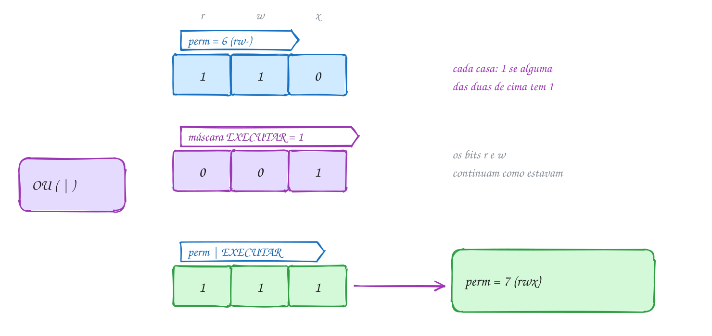
#include <stdio.h>
// cada permissão é um bit: 4 = 100, 2 = 010, 1 = 001
#define LER 4u // r
#define ESCREVER 2u // w
#define EXECUTAR 1u // x
void mostrar(const char *passo, unsigned p) {
printf("%-12s %u%u%u = %u %c%c%c\n", passo,
(p >> 2) & 1u, (p >> 1) & 1u, p & 1u, p, // os 3 bits, um por um
(p & LER) ? 'r' : '-',
(p & ESCREVER) ? 'w' : '-',
(p & EXECUTAR) ? 'x' : '-');
}
int main(void) {
unsigned perm = LER | ESCREVER; // liga dois bits de uma vez: 110
mostrar("inicial", perm);
perm |= EXECUTAR; // OU liga um bit
mostrar("liga x", perm);
perm &= ~ESCREVER; // E com o inverso desliga um bit
mostrar("desliga w", perm);
if (perm & ESCREVER) { // E isola um bit para testar
printf("pode escrever\n");
} else {
printf("não pode escrever\n");
}
perm ^= EXECUTAR; // OU exclusivo inverte um bit
mostrar("inverte x", perm);
return 0;
}
// Saída:
// inicial 110 = 6 rw-
// liga x 111 = 7 rwx
// desliga w 101 = 5 r-x
// não pode escrever
// inverte x 100 = 4 r--
(p >> 2) & 1u lê o bit 2: empurra-o para a casa 0 e apaga o resto. A pergunta
"pode escrever?" é um & com a máscara; se sobrou algum bit, a resposta é Sim:
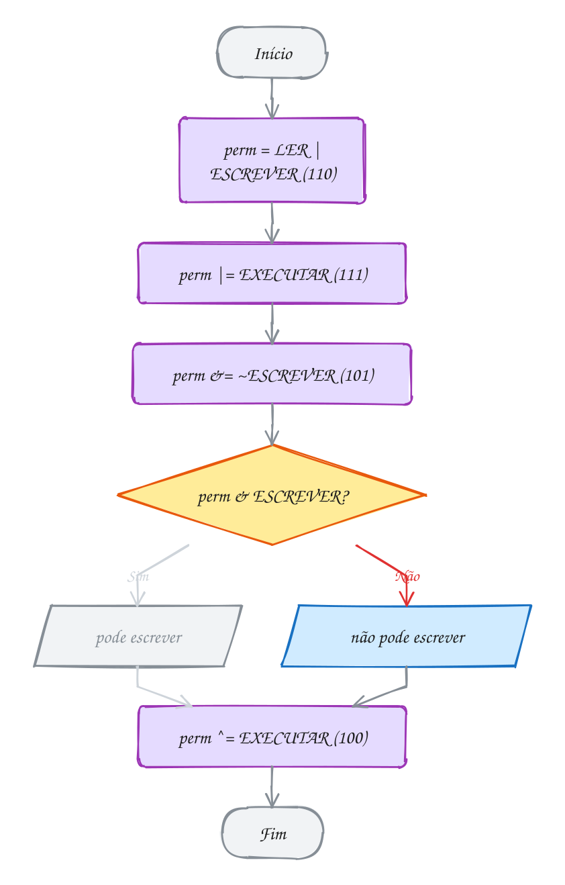
Exemplo A129 · Os ingredientes da pizza
#include <stdio.h>
// cada ingrediente é um bit: 1u << n liga só o bit n
#define QUEIJO (1u << 0)
#define TOMATE (1u << 1)
#define CEBOLA (1u << 2)
#define CALABRESA (1u << 3)
#define AZEITONA (1u << 4)
void mostrar(const char *nome, unsigned p) {
const char *ingredientes[] = {"queijo", "tomate", "cebola", "calabresa", "azeitona"};
printf("%-12s", nome);
for (int b = 0; b < 5; b++) {
if (p & (1u << b)) {
printf(" %s", ingredientes[b]);
}
}
printf("\n");
}
int main(void) {
unsigned calabresa = QUEIJO | CALABRESA | CEBOLA | AZEITONA;
unsigned marguerita = QUEIJO | TOMATE;
mostrar("calabresa", calabresa);
mostrar("marguerita", marguerita);
unsigned meu = calabresa & ~(CEBOLA | AZEITONA); // tira dois de uma vez
mostrar("a minha", meu);
mostrar("em comum", calabresa & marguerita); // E: o que as duas têm
mostrar("meio a meio", calabresa | marguerita); // OU: tudo junto
unsigned alergia = CEBOLA | TOMATE;
// "tem ALGUM" e "tem TODOS" são testes diferentes
printf("marguerita tem algum de cebola/tomate? %s\n",
(marguerita & alergia) != 0 ? "sim" : "não");
printf("marguerita tem todos? %s\n",
(marguerita & alergia) == alergia ? "sim" : "não");
return 0;
}
// Saída:
// calabresa queijo cebola calabresa azeitona
// marguerita queijo tomate
// a minha queijo calabresa
// em comum queijo
// meio a meio queijo tomate cebola calabresa azeitona
// marguerita tem algum de cebola/tomate? sim
// marguerita tem todos? não
gcc ~/LPEDC/material/A129.c -o ~/LPEDC/material/A129 && ~/LPEDC/material/A129
Exemplo A130 · O chmod 755
#include <stdio.h>
// três grupos de 3 bits: dono (bits 8-6), grupo (5-3) e outros (2-0)
#define DONO 6
#define GRUPO 3
#define OUTROS 0
unsigned montar(unsigned dono, unsigned grupo, unsigned outros) {
return (dono << DONO) | (grupo << GRUPO) | (outros << OUTROS);
}
void mostrar(unsigned modo) {
const char letras[] = "rwx";
printf("octal %03o, hexa 0x%03X, decimal %u\n", modo, modo, modo);
printf("bits ");
for (int b = 8; b >= 0; b--) {
printf("%u", (modo >> b) & 1u);
}
printf("\nls ");
for (int b = 8; b >= 0; b--) {
// bit 8 é r, 7 é w, 6 é x, e o padrão se repete a cada 3
printf("%c", ((modo >> b) & 1u) ? letras[(8 - b) % 3] : '-');
}
printf("\n");
}
int main(void) {
unsigned modo = montar(7, 5, 5); // rwx r-x r-x
mostrar(modo);
unsigned outros = (modo >> OUTROS) & 7u; // máscara 111 pega 3 bits
printf("outros podem escrever? %s\n", (outros & 2u) ? "sim" : "não");
printf("é igual ao literal octal 0755? %s\n", modo == 0755 ? "sim" : "não");
return 0;
}
// Saída:
// octal 755, hexa 0x1ED, decimal 493
// bits 111101101
// ls rwxr-xr-x
// outros podem escrever? não
// é igual ao literal octal 0755? sim
gcc ~/LPEDC/material/A130.c -o ~/LPEDC/material/A130 && ~/LPEDC/material/A130
Exercício E385 · ★☆☆
Escreva a função void mostrar(const char *nome, unsigned char r), que mostra o nome, os 8 bits de r (com um espaço no meio), o valor em hexa e em decimal. Com a = 0xCA e b = 0x5C (dois unsigned char), use a função para mostrar a, b e os seis resultados abaixo, guardando cada um num unsigned char:
a & b a | b a ^ b ~a a << 1 a >> 3
Saída esperada:
a 1100 1010 = 0xCA = 202
b 0101 1100 = 0x5C = 92
a & b 0100 1000 = 0x48 = 72
a | b 1101 1110 = 0xDE = 222
a ^ b 1001 0110 = 0x96 = 150
~a 0011 0101 = 0x35 = 53
a << 1 1001 0100 = 0x94 = 148
a >> 3 0001 1001 = 0x19 = 25
Exercício E387 · ★★☆
Escreva duas funções para um uint16_t (16 bits):
- void mostrar_bits(uint16_t x): mostra os 16 bits, do 15 ao 0, com um
espaço a cada 4;
- int contar_uns(uint16_t x): conta quantos bits estão ligados.
Use as duas em 2025, 255 e 4096 e diga a paridade (par ou ímpar) da quantidade de bits 1. Esse "bit de paridade" é um jeito antigo e barato de detectar um bit corrompido numa transmissão.
Saída esperada:
2025: 0000 0111 1110 1001 -> 8 bits 1 (par)
255: 0000 0000 1111 1111 -> 8 bits 1 (par)
4096: 0001 0000 0000 0000 -> 1 bits 1 (ímpar)
Exercício E388 · ★★☆
As notificações do app ficam em flags: EMAIL (1), SMS (2) e PUSH (4). Escreva void mostrar(unsigned f), que mostra numa linha se cada uma está ligada ou desligada. Comece com email e push ligados, mostre, desligue o push (só ele, sem mexer nos outros bits) e mostre de novo.
Saída esperada:
email: ligado | sms: desligado | push: ligado
email: ligado | sms: desligado | push: desligado
Exercício E389 · ★★★
No CSS, uma cor como #FF8800 são três bytes juntos: vermelho (FF), verde (88) e azul (00). Guarde cores num uint32_t (os 8 bits de cima ficam zerados) e escreva:
- uint32_t rgb(unsigned r, unsigned g, unsigned b): empacota;
- unsigned canal_r(uint32_t c), canal_g e canal_b: desempacotam;
- uint32_t escurecer(uint32_t c): divide cada canal por 2;
- uint32_t cinza(uint32_t c): os três canais viram a média deles.
Saída esperada:
rgb(255, 136, 0) = #FF8800
#3366CC -> r = 51, g = 102, b = 204
#FF8800 escurecida = #7F4400
#3366CC em cinza = #777777
A lanchonete quer um cardápio no app. Cada item tem nome, preço, categoria (lanche, bebida ou sobremesa) e marcações: vegano, sem glúten, picante. O cliente quer filtrar "só o que é vegano e sem glúten", e o dono quer cadastrar itens novos sem mudar o código. Nenhuma peça do módulo resolve isso sozinha; juntas, resolvem com pouco código.
Pense numa ficha de cardápio impressa: cada prato tem as suas informações
numa linha, e símbolos pequenos ao lado do nome marcam as restrições. O
programa monta essa ficha com uma struct. Item junta nome, categoria, preço
e marcações, e o typedef dá a ela um nome curto, como nos assuntos 0059 e
0060 (BACKES, 2013, cap. 8).
A categoria é uma escolha entre três valores fixos, o caso exato do enum do
assunto 0063. Categoria dá nome a LANCHE, BEBIDA e SOBREMESA, e um
último nome, QTD_CATEGORIAS, vale 3 e dimensiona o vetor de textos que
traduz cada categoria para a tela (DEITEL; DEITEL, 2011, cap. 10). Se a
lanchonete criar a categoria "porção", o vetor acompanha.
As marcações são sim ou não, e um item pode ter várias ao mesmo tempo. Isso
pede as flags do assunto 0065: vegano é o bit 0, sem glúten o bit 1, picante
o bit 2, todos num unsigned tags (DEITEL; DEITEL, 2011, cap. 10). O suco
de caju, vegano e sem glúten, tem tags = VEGANO | SEM_GLUTEN, o binário
011.
O filtro "tem todas estas marcações" cabe numa linha:
(tags & mascara) == mascara. A máscara traz ligados os bits que o cliente
exige. O & apaga as tags do item que estão fora da máscara; se o que sobra
é a própria máscara, nenhuma exigência faltou. O suco (011) contra a máscara
011 dá 011, e passa. O burger de grão-de-bico (001) dá 001: falta o
sem glúten, e ele fica de fora. Com máscara 0, a conta sempre dá 0, que é
igual à máscara, e todo item passa; a mesma função lista o cardápio inteiro.
Os itens moram num vetor de structs, como a tabela do assunto 0061, mas no
heap, porque o dono não sabe quantos vão ser. Uma struct Cardapio
administra esse vetor com três dados: o ponteiro para os itens, quantos
existem (n) e quantos cabem (cap). Quando n chega a cap, o
realloc dobra a capacidade: de 0 vai a 2, depois 4, depois 8. Com 6 itens,
sobram 2 vagas. Esse trio de ponteiro, tamanho e capacidade é a semente do
vetor dinâmico que o módulo 11 transforma em tipo abstrato (CELES; RANGEL,
2002).
As funções recebem ponteiros, como no assunto 0062. cardapio_adicionar
recebe Cardapio *c, porque precisa mudar n, cap e o próprio ponteiro
dos itens. mostrar_item recebe const Item *it, porque só lê: o ponteiro
evita copiar os 56 bytes de cada item, e o const garante que nada muda
(FEOFILOFF, 2009, ap. E). Esses 56 bytes são 32 do nome, 4 da categoria, 4 de
preenchimento para alinhar o double, 8 do preço, 4 das tags e mais 4 de
preenchimento no fim, para o próximo item do vetor também começar alinhado.
[!WARNING]
c->itens[c->n++] = itcopia o item para dentro do vetor: mexer depois emitnão muda o cardápio. EItem *p = &c.itens[0]fica solto após o próximorealloc, porque o vetor pode ter mudado de endereço. Em vetor que cresce, guarde índices, não ponteiros.
O cardápio da lanchonete tem 6 itens. O suco de caju tem as tags 011 (vegano
e sem glúten) e passa na máscara 011; o burger de grão-de-bico tem 001,
falta o sem glúten, e fica de fora:
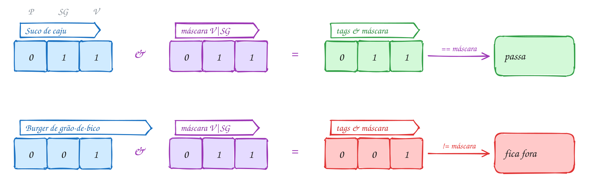
#include <stdio.h>
#include <stdlib.h>
typedef enum { LANCHE, BEBIDA, SOBREMESA, QTD_CATEGORIAS } Categoria;
// flags: cada característica é um bit
#define VEGANO (1u << 0)
#define SEM_GLUTEN (1u << 1)
#define PICANTE (1u << 2)
typedef struct {
char nome[32];
Categoria categoria;
double preco;
unsigned tags;
} Item;
typedef struct {
Item *itens; // vetor no heap
int n; // quantos itens tem
int cap; // quantos cabem
} Cardapio;
int cardapio_adicionar(Cardapio *c, Item it) {
if (c->n == c->cap) {
int nova = c->cap == 0 ? 2 : 2 * c->cap;
Item *novo = realloc(c->itens, nova * sizeof *novo);
if (novo == NULL) {
return 0;
}
c->itens = novo;
c->cap = nova;
}
c->itens[c->n++] = it; // copia a struct inteira para dentro do vetor
return 1;
}
void mostrar_item(const Item *it) {
const char *categorias[QTD_CATEGORIAS] = {"lanche", "bebida", "sobremesa"};
printf(" R$ %5.2f %s (%s)%s%s%s\n", it->preco, it->nome, categorias[it->categoria],
(it->tags & VEGANO) ? " [V]" : "",
(it->tags & SEM_GLUTEN) ? " [SG]" : "",
(it->tags & PICANTE) ? " [P]" : "");
}
// mostra os itens que têm TODAS as tags da máscara
void filtrar(const Cardapio *c, unsigned mascara) {
for (int i = 0; i < c->n; i++) {
if ((c->itens[i].tags & mascara) == mascara) {
mostrar_item(&c->itens[i]);
}
}
}
int main(void) {
Cardapio c = {NULL, 0, 0};
Item itens[] = {
{"X-Burger", LANCHE, 28.90, 0},
{"Burger de grão-de-bico", LANCHE, 32.00, VEGANO},
{"Tapioca de frango", LANCHE, 18.50, SEM_GLUTEN},
{"Asinha apimentada", LANCHE, 24.00, PICANTE | SEM_GLUTEN},
{"Suco de caju", BEBIDA, 9.00, VEGANO | SEM_GLUTEN},
{"Pudim", SOBREMESA, 12.00, SEM_GLUTEN},
};
int n = sizeof itens / sizeof itens[0];
for (int i = 0; i < n; i++) {
if (!cardapio_adicionar(&c, itens[i])) {
free(c.itens);
return 1;
}
}
printf("Cardápio (%d itens, capacidade %d):\n", c.n, c.cap);
filtrar(&c, 0); // máscara vazia: todo item passa
printf("Veganos e sem glúten:\n");
filtrar(&c, VEGANO | SEM_GLUTEN);
free(c.itens);
return 0;
}
// Saída:
// Cardápio (6 itens, capacidade 8):
// R$ 28.90 X-Burger (lanche)
// R$ 32.00 Burger de grão-de-bico (lanche) [V]
// R$ 18.50 Tapioca de frango (lanche) [SG]
// R$ 24.00 Asinha apimentada (lanche) [SG] [P]
// R$ 9.00 Suco de caju (bebida) [V] [SG]
// R$ 12.00 Pudim (sobremesa) [SG]
// Veganos e sem glúten:
// R$ 9.00 Suco de caju (bebida) [V] [SG]
O fluxograma é o do filtrar: um laço sobre o vetor e uma pergunta de bits por
item, para qualquer máscara:
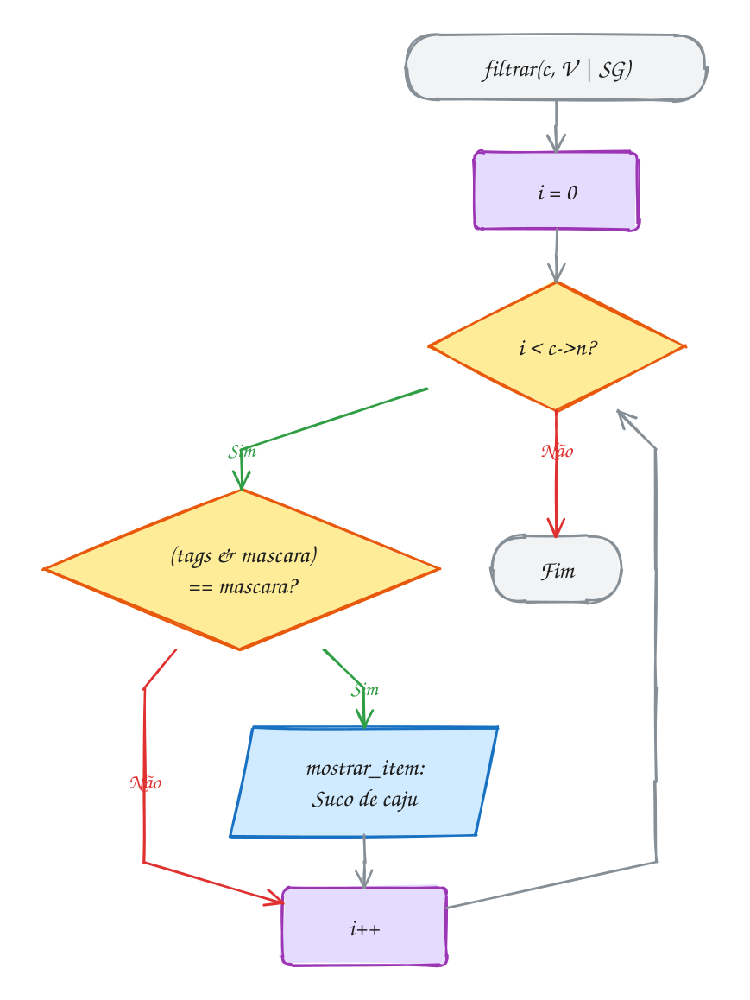
Exemplo A131 · Os alunos da academia
#include <stdbool.h>
#include <stdio.h>
#include <stdlib.h>
#include <string.h>
typedef enum { MENSAL, TRIMESTRAL, ANUAL, QTD_PLANOS } Plano;
// modalidades: cada uma é um bit
#define MUSCULACAO (1u << 0)
#define NATACAO (1u << 1)
#define YOGA (1u << 2)
typedef struct {
char nome[16];
Plano plano;
unsigned modalidades;
} Aluno;
typedef struct {
Aluno *v;
int n, cap;
} Academia;
bool matricular(Academia *a, const char *nome, Plano plano, unsigned mods) {
if (a->n == a->cap) {
int nova = a->cap == 0 ? 2 : 2 * a->cap;
Aluno *novo = realloc(a->v, nova * sizeof *novo);
if (novo == NULL) {
return false;
}
a->v = novo;
a->cap = nova;
}
Aluno *al = &a->v[a->n]; // ponteiro usado logo, antes de outro realloc
strcpy(al->nome, nome);
al->plano = plano;
al->modalidades = mods;
a->n++;
return true;
}
// devolve o índice (e não um ponteiro: o vetor pode mudar de lugar)
int procurar(const Academia *a, const char *nome) {
for (int i = 0; i < a->n; i++) {
if (strcmp(a->v[i].nome, nome) == 0) {
return i;
}
}
return -1;
}
// "alguma" das modalidades da máscara, não "todas"
void listar_alguma(const Academia *a, unsigned mascara) {
for (int i = 0; i < a->n; i++) {
if ((a->v[i].modalidades & mascara) != 0) {
printf(" %s\n", a->v[i].nome);
}
}
}
int main(void) {
const char *planos[QTD_PLANOS] = {"mensal", "trimestral", "anual"};
Academia a = {NULL, 0, 0};
bool ok = matricular(&a, "Bruna", ANUAL, MUSCULACAO | YOGA) &&
matricular(&a, "Davi", MENSAL, NATACAO) &&
matricular(&a, "Elis", MENSAL, MUSCULACAO) &&
matricular(&a, "Fabio", TRIMESTRAL, MUSCULACAO | NATACAO | YOGA) &&
matricular(&a, "Gil", ANUAL, 0);
if (!ok) {
free(a.v);
return 1;
}
int i = procurar(&a, "Davi");
if (i != -1) {
a.v[i].modalidades |= YOGA; // Davi entrou na yoga
a.v[i].plano = ANUAL; // e trocou de plano
}
int por_plano[QTD_PLANOS] = {0};
for (int k = 0; k < a.n; k++) {
por_plano[a.v[k].plano]++;
}
for (Plano p = MENSAL; p < QTD_PLANOS; p++) {
printf("%s: %d aluno(s)\n", planos[p], por_plano[p]);
}
printf("Fazem natação ou yoga:\n");
listar_alguma(&a, NATACAO | YOGA);
printf("%d alunos, capacidade %d\n", a.n, a.cap);
free(a.v);
return 0;
}
// Saída:
// mensal: 1 aluno(s)
// trimestral: 1 aluno(s)
// anual: 3 aluno(s)
// Fazem natação ou yoga:
// Bruna
// Davi
// Fabio
// 5 alunos, capacidade 8
gcc ~/LPEDC/material/A131.c -o ~/LPEDC/material/A131 && ~/LPEDC/material/A131
Exemplo A132 · A comanda e o pagamento
#include <stdio.h>
typedef struct {
char nome[24];
double preco;
} Item;
typedef struct {
const Item *item; // aponta para o cardápio: não copia o item
int qtd;
} Linha;
typedef enum { PIX, CARTAO, DINHEIRO } FormaPagamento;
typedef struct {
FormaPagamento forma;
union {
char chave[40]; // PIX
int parcelas; // CARTAO
double entregue; // DINHEIRO: quanto o cliente deu
} dados;
} Pagamento;
double total_comanda(const Linha linhas[], int n) {
double total = 0;
for (int i = 0; i < n; i++) {
total += linhas[i].item->preco * linhas[i].qtd; // ponteiro dentro de struct
}
return total;
}
void pagar(const Pagamento *p, double total) {
switch (p->forma) {
case PIX:
printf("Pix de R$ %.2f para %s\n", total, p->dados.chave);
break;
case CARTAO:
printf("Cartão: %dx de R$ %.2f\n", p->dados.parcelas, total / p->dados.parcelas);
break;
case DINHEIRO:
printf("Dinheiro: recebeu R$ %.2f, troco R$ %.2f\n", p->dados.entregue,
p->dados.entregue - total);
break;
}
}
int main(void) {
const Item cardapio[] = {{"X-Burger", 28.90}, {"Suco de caju", 9.00}, {"Pudim", 12.00}};
Linha mesa7[] = {{&cardapio[0], 2}, {&cardapio[1], 2}, {&cardapio[2], 1}};
int n = sizeof mesa7 / sizeof mesa7[0];
double total = total_comanda(mesa7, n);
for (int i = 0; i < n; i++) {
printf("%d x %s\n", mesa7[i].qtd, mesa7[i].item->nome);
}
printf("Total: R$ %.2f\n", total);
Pagamento formas[] = {
{PIX, .dados.chave = "lanchonete@exemplo.com"},
{CARTAO, .dados.parcelas = 3},
{DINHEIRO, .dados.entregue = 100.00},
};
for (int i = 0; i < 3; i++) {
pagar(&formas[i], total);
}
return 0;
}
// Saída:
// 2 x X-Burger
// 2 x Suco de caju
// 1 x Pudim
// Total: R$ 87.80
// Pix de R$ 87.80 para lanchonete@exemplo.com
// Cartão: 3x de R$ 29.27
// Dinheiro: recebeu R$ 100.00, troco R$ 12.20
gcc ~/LPEDC/material/A132.c -o ~/LPEDC/material/A132 && ~/LPEDC/material/A132
Exercício E391 · ★☆☆
O mercado imprime etiquetas para a prateleira. Crie:
- um enum Setor { HORTIFRUTI, LATICINIOS, PADARIA };
- flags PROMO (bit 0), ORGANICO (bit 1) e REFRIGERADO (bit 2);
- um typedef struct Produto com nome, setor, preço e flags;
- void etiqueta(const Produto *p), que mostra uma linha por produto.
Use os três produtos abaixo.
Saída esperada:
Banana prata (hortifrúti) R$ 6.99/kg [orgânico]
Iogurte natural (laticínios) R$ 4.50/kg [promo] [refrigerado]
Pão francês (padaria) R$ 16.90/kg
Exercício E393 · ★★☆
Monte um estoque que cresce: typedef struct { Produto *v; int n, cap; } Estoque; com as funções
- bool estoque_adicionar(Estoque *e, const char *nome, int qtd);
- bool estoque_remover(Estoque *e, const char *nome): acha pelo nome e
puxa os seguintes uma posição para trás (a ordem se mantém);
- void estoque_listar(const Estoque *e) e void estoque_liberar(Estoque *e).
Adicione Arroz (12), Feijão (30), Café (8), Açúcar (15) e Leite (24). Remova "Feijão" e depois "Macarrão" (que não existe).
Saída esperada:
remover Feijão: ok
remover Macarrão: não encontrado
4 produtos (capacidade 8):
Arroz: 12
Café: 8
Açúcar: 15
Leite: 24
Exercício E394 · ★★☆
Crie o tipo Item (nome até 19 letras, preco e tags) com as flags DESTAQUE (bit 0) e VEGANO (bit 1). Aloque com malloc um vetor de 3 itens: X-Burger 28.90 sem tags, Suco de caju 9.00 (DESTAQUE e VEGANO) e Pudim 12.00 (DESTAQUE). Escreva void listar(const Item *itens, int n), que mostra nome, preço e " [destaque]" se a tag estiver ligada. Liste, tire o destaque só do suco, liste de novo e libere o vetor.
Saída esperada:
X-Burger R$ 28.90
Suco de caju R$ 9.00 [destaque]
Pudim R$ 12.00 [destaque]
-- tira o destaque do suco --
X-Burger R$ 28.90
Suco de caju R$ 9.00
Pudim R$ 12.00 [destaque]
Exercício E395 · ★★★
Uma agenda de tarefas. Cada Tarefa tem título, Prioridade (enum BAIXA, MEDIA, ALTA), prazo (dia do mês) e tags em bits: TRABALHO, CASA, URGENTE. Aloque o vetor com malloc, preencha com as 6 tarefas abaixo, ordene com qsort (prioridade mais alta primeiro; empate: prazo menor primeiro) e mostre a lista inteira e depois só as tarefas de TRABALHO.
título prioridade prazo tags
Pagar aluguel ALTA 5 CASA | URGENTE
Revisar PR MEDIA 3 TRABALHO
Comprar ração BAIXA 8 CASA
Deploy da API ALTA 2 TRABALHO | URGENTE
Reunião 1:1 MEDIA 3 TRABALHO
Lavar o carro BAIXA 12 CASA
Saída esperada:
[alta] dia 2: Deploy da API
[alta] dia 5: Pagar aluguel
[média] dia 3: Reunião 1:1
[média] dia 3: Revisar PR
[baixa] dia 8: Comprar ração
[baixa] dia 12: Lavar o carro
Trabalho:
[alta] dia 2: Deploy da API
[média] dia 3: Reunião 1:1
[média] dia 3: Revisar PR
30 exercícios que misturam os assuntos do módulo, no ritmo da prova. Arquivos P0801.c a P0830.c, em material/; resoluções em _respostas/08-structs/lista/.
Exercício P0801 · ★☆☆ · A distância entre as paradas
No mapa da linha de ônibus, cada parada tem coordenadas (x, y) em km. Crie typedef struct { double x, y; } Ponto; e escreva:
double distancia(Ponto a, Ponto b); // sqrt((bx - ax)² + (by - ay)²)
Ponto meio(Ponto a, Ponto b); // o ponto médio, para o abrigo
Para as paradas abaixo, mostre a distância de cada trecho, o total do percurso e o ponto médio entre a primeira e a última:
Ponto paradas[4] = {{0.0, 0.0}, {3.0, 4.0}, {6.0, 8.0}, {6.0, 11.5}};
Saída esperada:
Parada 1 -> 2: 5.00 km
Parada 2 -> 3: 5.00 km
Parada 3 -> 4: 3.50 km
Total: 13.50 km
Abrigo no meio: (3.00, 5.75)
Resposta esperada: a saída acima (13.50 km no total).
gcc ~/LPEDC/material/P0801.c -o ~/LPEDC/material/P0801 -lm && ~/LPEDC/material/P0801
Exercício P0802 · ★☆☆ · A que horas o voo chega
Crie typedef struct { int h, m; } Horario; e escreva
Horario somar(Horario ini, int minutos, int *dias);
que devolve o horário depois de passar minutos, sempre normalizado (m de 0 a 59, h de 0 a 23), e guarda em *dias quantas vezes passou da meia-noite. Teste os três voos:
Manaus 22:45 + 230 min (3h50)
Belém 06:10 + 95 min
Rio Branco 23:30 + 1500 min (uma viagem com conexões)
Saída esperada:
Manaus 22:45 + 230 min = 02:35 (+1 dia)
Belém 06:10 + 95 min = 07:45
Rio Branco 23:30 + 1500 min = 00:30 (+2 dias)
Exercício P0803 · ★☆☆ · O estoque baixo da farmácia
Crie o tipo Remedio (codigo int, nome com até 23 letras, estoque int, minimo int) e guarde os 6 remédios abaixo num vetor de structs:
101 Dipirona 40 20 102 Amoxicilina 8 15 103 Losartana 22 25
104 Omeprazol 60 30 105 Insulina 3 10 106 Paracetamol 35 20
Escreva int buscar(const Remedio *v, int n, int codigo), que devolve o índice do remédio (ou -1). Mostre os remédios com estoque abaixo do mínimo e quanto falta comprar, e depois procure os códigos 105 e 110:
Saída esperada:
Comprar:
Amoxicilina faltam 7
Losartana faltam 3
Insulina faltam 7
Código 105: Insulina, estoque 3
Código 110: não cadastrado
Exercício P0804 · ★☆☆ · O carro e o tanque
Crie typedef struct { char modelo[16]; double tanque, capacidade, km_por_litro, odometro; } Carro; e escreva duas funções que recebem um PONTEIRO para o carro e mexem nele com ->:
double abastecer(Carro *c, double litros); // devolve quanto entrou
double rodar(Carro *c, double km); // devolve quanto rodou
abastecer não passa da capacidade; rodar gasta km / km_por_litro litros e, se o combustível acabar antes, roda só o que der. Comece com um Mobi (tanque 5 L, capacidade 47 L, 13.5 km/L, odômetro 10230) e faça: abastecer 50 L, rodar 300 km, rodar 400 km, abastecer 20 L.
Saída esperada:
Abasteceu 42.00 L
Mobi: tanque 47.00 L, odômetro 10230.0 km
Rodou 300.0 km
Mobi: tanque 24.78 L, odômetro 10530.0 km
Rodou 334.5 km
Mobi: tanque 0.00 L, odômetro 10864.5 km
Abasteceu 20.00 L
Mobi: tanque 20.00 L, odômetro 10864.5 km
Exercício P0805 · ★☆☆ · Quantos dias tem o mês
Crie typedef enum { JAN = 1, FEV, MAR, ABR, MAI, JUN, JUL, AGO, SET, OUT, NOV, DEZ } Mes; e escreva:
bool bissexto(int ano);
int dias_no_mes(Mes m, int ano);
Use um switch no dias_no_mes (fevereiro depende do ano). Mostre os dias de fevereiro em 2024, 2026, 1900 e 2000, e o total de dias de 2026 somando os 12 meses num laço que anda pelo enum:
Saída esperada:
fev/2024: 29 dias
fev/2026: 28 dias
fev/1900: 28 dias
fev/2000: 29 dias
2026: 365 dias
Resposta esperada: a saída acima (2026 tem 365 dias).
Exercício P0806 · ★☆☆ · As permissões do arquivo
No Linux, as permissões de um arquivo são 9 bits: rwx do dono, rwx do grupo e rwx dos outros, do bit 8 ao bit 0 (r vale 4, w vale 2 e x vale 1 dentro de cada trio). Por isso chmod 754 é 111 101 100 em binário. Escreva void mostrar(const char *rotulo, unsigned modo), que mostra o rótulo, o número em octal (%o) e as letras (com '-' no lugar do bit desligado), e teste com 0754 e 0644. Depois, partindo de 0644, ligue o x do dono, desligue o r dos outros e INVERTA o w do grupo, mostrando o modo depois de cada passo:
Saída esperada:
chmod 754: 754 rwxr-xr--
chmod 644: 644 rw-r--r--
liga x do dono: 744 rwxr--r--
desliga r dos outros: 740 rwxr-----
inverte w do grupo: 760 rwxrw----
Exercício P0807 · ★☆☆ · O endereço IP em 32 bits
Um endereço IPv4 como 192.168.10.42 são 4 bytes, e cabe num uint32_t (do stdint.h), com o primeiro número nos 8 bits de cima. Escreva:
uint32_t montar(int a, int b, int c, int d);
void mostrar(const char *rotulo, uint32_t ip); // os 4 bytes: >> e & 0xFF
A máscara de rede /24 tem os 24 bits de cima ligados: 0xFFFFFF00. A REDE de um IP é ip & mascara, e o número do computador na rede é ip & ~mascara. Mostre o IP, em hexa e em pontos, a rede e o computador, para /24 e /16:
Saída esperada:
192.168. 10. 42 0xC0A80A2A IP
Com /24:
255.255.255. 0 0xFFFFFF00 máscara
192.168. 10. 0 0xC0A80A00 rede
0. 0. 0. 42 0x0000002A máquina
Com /16:
255.255. 0. 0 0xFFFF0000 máscara
192.168. 0. 0 0xC0A80000 rede
0. 0. 10. 42 0x00000A2A máquina
Exercício P0808 · ★☆☆ · Conserte o cadastro do sócio
O clube quer dar 20% de desconto na mensalidade dos sócios com mais de 10 anos de casa. O programa abaixo tem DOIS erros de propósito: o gcc avisa de um (leia o warning); o outro é de lógica: o desconto é calculado, mas não chega no sócio. Conserte os dois. O programa deve mostrar:
Saída esperada:
Seu Lourival 23 anos: R$ 120.00
Kelly 4 anos: R$ 150.00
Dona Ivete 11 anos: R$ 96.00
Exercício P0809 · ★☆☆ · O mais velho da família
Crie typedef struct { int dia, mes, ano; } Data; e typedef struct { char nome[20]; Data nascimento; } Pessoa; (uma struct dentro da outra). Escreva int compara_data(Data a, Data b), que devolve negativo se a vem antes de b, 0 se são iguais e positivo se a vem depois. Com a família abaixo, mostre o mais velho, o mais novo e quem faz aniversário em março:
Pessoa familia[5] = {{"Vó Nazaré", {12, 3, 1941}},
{"Tio Edu", {30, 11, 1968}},
{"Mãe", {5, 3, 1972}},
{"Lucas", {19, 7, 2001}},
{"Bia", {2, 1, 2009}}};
Saída esperada:
Mais velho: Vó Nazaré (1941)
Mais novo: Bia (2009)
Aniversário em março: Vó Nazaré (dia 12) Mãe (dia 5)
Exercício P0810 · ★☆☆ · A configuração com campos nomeados
O som do carro tem uma struct de configuração com vários campos:
typedef struct {
int volume, graves, agudos, balanco;
bool loudness;
char fonte[12];
} Config;
Com os inicializadores designados do C99, você escreve só os campos que importam, em qualquer ordem, e o resto vira zero (false, "" para a string): Config c = {.fonte = "Bluetooth", .volume = 18};. Monte os três perfis abaixo assim e mostre cada um com uma função void mostrar(const char *nome, const Config *c):
Saída esperada:
padrao vol 0, graves 0, agudos 0, balanço 0, loudness não, fonte ""
estrada vol 22, graves 3, agudos 0, balanço 0, loudness sim, fonte "Radio FM"
show vol 30, graves 5, agudos 4, balanço -2, loudness não, fonte "Pendrive"
Exercício P0811 · ★★☆ · O cardápio em duas ordens
A lanchonete guarda o cardápio num vetor de structs:
typedef struct { char nome[24]; double preco; int calorias; } Item;
X-Caboquinho 22.90 780 kcal Tapioca 12.00 420 kcal
Pastel de carne 9.50 510 kcal Açaí 500 ml 18.00 640 kcal
Suco de cupuaçu 8.00 190 kcal Misto quente 9.50 380 kcal
(o vetor já está pronto no esqueleto). Ordene com qsort duas vezes: primeiro em ordem alfabética do nome; depois pelo preço (do mais barato ao mais caro; no empate, o de menos calorias primeiro). Mostre as duas listas:
Saída esperada:
Por nome:
R$ 18.00 640 kcal Açaí 500 ml
R$ 9.50 380 kcal Misto quente
R$ 9.50 510 kcal Pastel de carne
R$ 8.00 190 kcal Suco de cupuaçu
R$ 12.00 420 kcal Tapioca
R$ 22.90 780 kcal X-Caboquinho
Por preço:
R$ 8.00 190 kcal Suco de cupuaçu
R$ 9.50 380 kcal Misto quente
R$ 9.50 510 kcal Pastel de carne
R$ 12.00 420 kcal Tapioca
R$ 18.00 640 kcal Açaí 500 ml
R$ 22.90 780 kcal X-Caboquinho
Exercício P0812 · ★★☆ · Ordenar os ponteiros, não as fichas
As fichas dos pacientes são grandes (cada uma tem um histórico de 200 caracteres), e mover uma ficha inteira a cada troca do qsort custa caro. Crie as fichas no heap e um vetor de PONTEIROS para elas, e ordene os ponteiros pela idade (do mais velho para o mais novo). As fichas não saem do lugar:
typedef struct { char nome[20]; int idade; char historico[200]; } Ficha;
Escreva Ficha *nova_ficha(const char *nome, int idade, const char *hist), que aloca e preenche uma ficha (antes do strcpy, confira com strlen se o texto cabe no campo; se não couber, devolva NULL). Crie as 4 fichas abaixo, ordene e mostre; mostre também quantos bytes cada troca move no qsort de ponteiros e quantos moveria no de fichas. Libere tudo:
Raimundo 58 "hipertensão" Jéssica 31 "asma"
Benedito 74 "diabetes tipo 2" Karina 45 "nenhum"
Saída esperada:
1. 74 anos: Benedito (diabetes tipo 2)
2. 58 anos: Raimundo (hipertensão)
3. 45 anos: Karina (nenhum)
4. 31 anos: Jéssica (asma)
A ficha do Raimundo continua no mesmo endereço, agora na posição 2
Bytes por troca: 8 (ponteiro) contra 224 (ficha)
Resposta esperada: a saída acima (os bytes por troca: 8 e 224).
Exercício P0813 · ★★☆ · Pix, cartão ou dinheiro
O caixa da loja aceita três formas de pagamento, e cada uma tem dados diferentes. Represente com uma union etiquetada:
typedef enum { PIX, CARTAO, DINHEIRO } Forma;
typedef struct {
Forma forma; // a etiqueta: diz qual campo da union vale
double valor;
union {
char chave[40]; // PIX
struct { char final[5]; int parcelas; } cartao; // CARTAO
double recebido; // DINHEIRO
} dados;
} Pagamento;
Escreva void recibo(const Pagamento *p), que usa um switch na etiqueta e mostra o que vale para aquela forma (no dinheiro, o troco; no cartão, o valor de cada parcela). Mostre os recibos dos três pagamentos abaixo e o sizeof da union e do Pagamento:
Saída esperada:
PIX de R$ 87.50 para loja@exemplo.com.br
Cartão final 4467: R$ 359.70 em 3x de R$ 119.90
Dinheiro: R$ 42.30, recebido R$ 50.00, troco R$ 7.70
sizeof da union: 40 bytes; sizeof do Pagamento: 56 bytes
Exercício P0814 · ★★☆ · A cor em 16 bits
Telas pequenas (como a de uma maquininha de cartão) guardam cada cor em 16 bits no formato RGB565: 5 bits de vermelho (bits 15 a 11), 6 de verde (10 a 5) e 5 de azul (4 a 0). Partindo de uma cor de 8 bits por canal (0 a 255), escreva:
uint16_t para_565(int r, int g, int b); // guarda os bits mais altos
void de_565(uint16_t c, int *r, int *g, int *b); // volta para 0..255
Para converter, jogue fora os bits de baixo: r >> 3 (fica com 5 bits), g >> 2 (6 bits), b >> 3. Para voltar, desloque para a esquerda e repita os bits de cima nos de baixo: r8 = (r5 << 3) | (r5 >> 2) (e g8 = (g6 << 2) | (g6 >> 4)). Converta as cores abaixo, mostrando o valor em hexa e a cor recuperada (algumas perdem um pouco de precisão):
laranja (255, 136, 0), verde-bandeira (0, 156, 59), branco (255, 255, 255)
Saída esperada:
laranja (255, 136, 0) -> 0xFC40 -> (255, 138, 0)
verde-bandeira ( 0, 156, 59) -> 0x04E7 -> ( 0, 158, 57)
branco (255, 255, 255) -> 0xFFFF -> (255, 255, 255)
Exercício P0815 · ★★☆ · O estoque por categoria
Uma loja de material de construção tem produtos de quatro categorias:
typedef enum { HIDRAULICA, ELETRICA, PINTURA, FERRAGEM,
N_CATEGORIAS } Categoria;
O último nome do enum (N_CATEGORIAS) vale 4 e serve de tamanho para vetores indexados pela categoria. Com os produtos abaixo (nome, categoria, quantidade, preço), calcule, num vetor de N_CATEGORIAS posições, quantos itens e quanto dinheiro há em estoque em cada categoria, e mostre a categoria com mais dinheiro parado:
Tubo PVC 25mm HIDRAULICA 40 12.90
Fio 2,5mm (rolo) ELETRICA 15 189.00
Tinta 18L PINTURA 8 329.90
Registro 3/4 HIDRAULICA 22 45.50
Disjuntor 20A ELETRICA 30 28.00
Parafuso (cento) FERRAGEM 60 9.80
Rolo de lã PINTURA 25 24.90
Saída esperada:
62 itens R$ 1517.00 Hidráulica
45 itens R$ 3675.00 Elétrica
33 itens R$ 3261.70 Pintura
60 itens R$ 588.00 Ferragem
Mais dinheiro parado: Elétrica
Exercício P0816 · ★★☆ · Batalha naval
O tabuleiro de batalha naval é uma matriz 5x5 de structs:
typedef struct { bool navio; bool atingida; } Casa;
Os navios ocupam as casas marcadas com '#' no mapa abaixo. Monte a matriz a partir do mapa (as linhas são strings), dispare os tiros da lista e mostre, para cada tiro, "água", "fogo!" ou "repetido". No fim, mostre o tabuleiro ('X' navio atingido, 'o' tiro na água, '#' navio intacto, '.' nada) e quantas casas de navio sobraram:
const char *mapa[5] = {".##..", ".....", "#...#", "#...#", "#...."};
int tiros[7][2] = {{0, 1}, {2, 2}, {0, 2}, {3, 0}, {0, 1}, {4, 4}, {2, 4}};
Saída esperada:
Tiro (0, 1): fogo!
Tiro (2, 2): água
Tiro (0, 2): fogo!
Tiro (3, 0): fogo!
Tiro (0, 1): repetido
Tiro (4, 4): água
Tiro (2, 4): fogo!
.XX..
.....
#.o.X
X...#
#...o
Sobram 3 casas de navio
Resposta esperada: a saída acima (sobram 3 casas de navio).
Exercício P0817 · ★★☆ · Conserte a promoção da vitrine
O programa abaixo deveria dar 15% de desconto em todos os produtos da vitrine e mostrar o total. Ele tem DOIS erros de propósito: um faz a promoção não chegar nos produtos (o programa roda e mostra o preço antigo); o outro o AddressSanitizer acusa quando roda. O gcc não avisa de nenhum. Conserte os dois. O programa deve mostrar:
Saída esperada:
Rede de dormir R$ 102.00
Cuia pintada R$ 29.75
Colar de sementes R$ 40.80
Farinha 1 kg R$ 11.90
Total R$ 184.45
Exercício P0818 · ★★☆ · Os números complexos
Crie typedef struct { double re, im; } Complexo; e escreva soma, multiplica (as duas devolvem um Complexo novo), double modulo(Complexo z) e void mostrar(const char *rotulo, Complexo z), que mostra no formato "a + bi" ou "a - bi". Com z = 1 + 2i e w = 3 - i, mostre z + w, z * w e |z * w|. Depois mostre as potências de i, de i¹ a i⁸, multiplicando uma de cada vez:
Saída esperada:
z + w = 4 + 1i
z * w = 5 + 5i
|z * w| = 7.0711
i^1 = 0 + 1i
i^2 = -1 + 0i
i^3 = 0 - 1i
i^4 = 1 + 0i
i^5 = 0 + 1i
i^6 = -1 + 0i
i^7 = 0 - 1i
i^8 = 1 + 0i
gcc ~/LPEDC/material/P0818.c -o ~/LPEDC/material/P0818 -lm && ~/LPEDC/material/P0818
Exercício P0819 · ★★☆ · A senha escondida com XOR
O operador ^ (ou exclusivo) tem uma propriedade útil: (x ^ k) ^ k == x. Aplicar a mesma chave duas vezes devolve o original. Escreva void cifrar(char *s, size_t n, unsigned char chave), que aplica ^ chave em cada um dos n bytes de s, e void hexa(const char *s, size_t n), que mostra os n bytes em hexadecimal. Cifre a mensagem com a chave 0x5A, mostre os bytes, decifre e mostre de novo. Depois conte quantos bits a chave tem ligados e mostre a chave em binário:
char msg[] = "Encontro no Teatro Amazonas, 19h";
Saída esperada:
Cifrada:
1F 34 39 35 34 2E 28 35 7A 34 35 7A 0E 3F 3B 2E
28 35 7A 1B 37 3B 20 35 34 3B 29 76 7A 6B 63 32
Decifrada: Encontro no Teatro Amazonas, 19h
Chave 0x5A = 01011010 (4 bits ligados)
Exercício P0820 · ★★☆ · A série do tamanho certo
Desde o C99, o ÚLTIMO campo de uma struct pode ser um vetor sem tamanho (o "membro flexível"): typedef struct { char nome[16]; int n; double v[]; } Serie;. O sizeof da struct não conta o vetor, e você aloca a struct junto com quantas posições quiser, num bloco só:
Serie *s = malloc(sizeof *s + n * sizeof s->v[0]);
Escreva Serie *nova_serie(const char *nome, const double *dados, int n), e crie duas séries de chuva (em mm), uma de 3 dias e outra de 7. Mostre cada série, a média, o sizeof da struct e quantos bytes cada bloco tem. Libere com UM free por série:
Belém: 12.5 30.0 8.0
Manaus: 0.0 4.5 22.0 18.0 0.0 6.5 11.0
Saída esperada:
sizeof(Serie) = 24 bytes
Belém (3 dias): 12.5 30.0 8.0
média 16.83 mm, bloco de 48 bytes
Manaus (7 dias): 0.0 4.5 22.0 18.0 0.0 6.5 11.0
média 8.86 mm, bloco de 80 bytes
Exercício P0821 · ★★★ · O catálogo ordenado por três chaves
O catálogo de uma loja de eletrônicos é um vetor de structs:
typedef enum { CELULAR, NOTEBOOK, FONE } Categoria;
typedef struct {
char nome[24]; Categoria cat; double preco; int estoque;
} Produto;
Ordene com qsort por uma chave COMPOSTA: primeiro a categoria (na ordem do enum), depois o preço (do mais barato ao mais caro) e, no empate, o nome (ordem alfabética). Depois mostre o catálogo agrupado, com um cabeçalho por categoria e, no fim de cada grupo, o valor do estoque (preço x estoque) da categoria:
Saída esperada:
== Celulares ==
Celular Lite R$ 999.00 x18
Celular Alfa R$ 1899.00 x 4
Celular Mega 5G R$ 1899.00 x10
Estoque: R$ 44568.00
== Notebooks ==
Notebook Basic R$ 2499.00 x 7
Notebook Ultra 14 R$ 4299.00 x 3
Notebook Pro 16 R$ 8999.00 x 1
Estoque: R$ 39389.00
== Fones ==
Fone com fio R$ 39.90 x60
Fone Bluetooth X R$ 199.90 x25
Fone Gamer R$ 199.90 x12
Estoque: R$ 9790.30
Exercício P0822 · ★★★ · O conjunto de bits dos assentos
Um ônibus de viagem tem 100 lugares (0 a 99), e cada lugar vendido é um bit: 100 bits cabem em 13 bytes (unsigned char v[13]). Crie
typedef struct { unsigned char bits[13]; } Conjunto;
e escreva inserir, remover, contem (bool), tamanho (quantos bits ligados), uniao e intersecao (as duas devolvem um Conjunto novo) e mostrar (lista os números). Dois aplicativos venderam lugares sem conversar entre si:
app A: 3 7 12 40 41 42 77 98
app B: 7 15 40 63 98 99
Mostre os vendidos de cada app, a união (todos os vendidos), a interseção (lugares vendidos DUAS vezes: problema!) e quantos lugares ainda estão livres. Depois o app A cancela o lugar 7; mostre a nova interseção:
Saída esperada:
App A (8): 3 7 12 40 41 42 77 98
App B (6): 7 15 40 63 98 99
Vendidos (11): 3 7 12 15 40 41 42 63 77 98 99
Vendidos duas vezes (3): 7 40 98
Livres: 89 de 100 (em 13 bytes)
Depois do cancelamento, duas vezes (2): 40 98
Exercício P0823 · ★★★ · Do CSV para o vetor de structs
O formulário de inscrição da corrida de rua exportou um CSV, uma pessoa por linha (nome;idade;cidade), e algumas linhas vieram com defeito:
const char *linhas[7] = {"Ana Paula;34;Manaus", "Joel;abc;Parintins",
"Rosa;52;Manaus", "Iuri;19;Itacoatiara",
"Sem cidade;40", "Marta;27;Parintins",
"Caio;61;Manaus"};
Crie typedef struct { char nome[24]; int idade; char cidade[16]; } Atleta; e escreva bool ler_atleta(const char *linha, Atleta *a), que separa os três campos (com strchr ou andando com um ponteiro), confere se a idade é só de dígitos, se há exatamente 3 campos e se cada texto cabe no seu campo, e preenche *a. Guarde as linhas boas num vetor de Atleta, mostre as recusadas e, das aceitas, a média de idade, o mais velho e quantos atletas há por cidade:
Saída esperada:
Recusada: "Joel;abc;Parintins"
Recusada: "Sem cidade;40"
Aceitas: 5
Média de idade: 38.6
Mais velho: Caio, 61 anos
Manaus: 3
Itacoatiara: 1
Parintins: 1
Exercício P0824 · ★★★ · Matriz esparsa vezes vetor
A rede de distribuição de água de um bairro tem 6 reservatórios, e a matriz A diz quanto (em mil litros) cada reservatório j manda para o ponto i. Quase tudo é zero, então A é guardada só pelos termos não nulos:
typedef struct { int l, c; double v; } Termo;
Termo a[7] = {{0, 0, 2.0}, {0, 3, 1.5}, {1, 1, 4.0}, {2, 5, 0.5},
{3, 0, 1.0}, {3, 2, 3.0}, {5, 4, 2.5}};
Escreva void mult(const Termo *t, int k, const double *x, double *y, int linhas), que calcula y = A x passando UMA vez pelos k termos (sem montar a matriz 6x6): cada termo (l, c, v) soma v * x[c] em y[l]. Com o vetor x de horas de bomba ligada abaixo, mostre y, quantas multiplicações foram feitas e quantas a matriz cheia faria. Depois calcule a transposta (troque l e c de cada termo) e mostre Aᵀ x:
double x[6] = {3, 1, 2, 4, 2, 6};
Saída esperada:
A x = 12.0 4.0 3.0 9.0 0.0 5.0
Multiplicações: 7 (a matriz cheia faria 36)
At x = 10.0 4.0 12.0 4.5 15.0 1.0
Exercício P0825 · ★★★ · Conserte o painel de sensores
O painel de uma estufa lê sensores de tipos diferentes, guardados numa union etiquetada, e cada sensor tem flags de estado em bits. O programa tem TRÊS erros de propósito: o gcc avisa de dois (leia os warnings) e o terceiro é de lógica (o programa roda, mas mostra coisa errada). Conserte os três. O programa deve mostrar:
Saída esperada:
Estufa 1: 38.5 graus
ALERTA
Estufa 2: 81% de umidade
Depósito: porta aberta
bateria fraca
Exercício P0826 · ★★★ · Os conflitos da agenda
A agenda de uma fisioterapeuta está fora de ordem e tem compromissos que se sobrepõem. Crie:
typedef enum { SEG, TER, QUA, QUI, SEX } Dia;
typedef struct { int h, m; } Horario;
typedef struct { char titulo[24]; Dia dia; Horario ini, fim; } Compromisso;
Ordene com qsort por dia e, no mesmo dia, pelo horário de início. Depois mostre a agenda e, para cada par de compromissos SEGUIDOS (na ordem) do mesmo dia que se sobrepõem, uma linha de conflito com quantos minutos se cruzam. Encostar (um termina 10:00 e o outro começa 10:00) não é conflito:
Saída esperada:
seg 08:00-09:15 RPG Larissa
seg 09:00-10:00 Hidroterapia Seu Juca
seg 14:30-15:30 Avaliação Sr. Moacir
qua 09:00-10:00 Pilates Dona Cleide
qua 09:40-11:00 Reunião da clínica
qua 11:00-11:30 Retorno Paulinho
sex 18:00-20:00 Curso online
Conflito (seg): "RPG Larissa" e "Hidroterapia Seu Juca", 15 min
Conflito (qua): "Pilates Dona Cleide" e "Reunião da clínica", 20 min
Resposta esperada: a saída acima (dois conflitos).
Exercício P0827 · ★★★ · O crivo de primos em bits
O crivo de Eratóstenes marca os números compostos até N. Com um bool por número, N = 1000 gasta 1001 bytes; com um BIT por número, gasta 126. Crie
typedef struct { int n; unsigned char bits[126]; } Crivo;
em que o bit k ligado quer dizer "k é composto". Escreva void montar(Crivo *c, int n), bool eh_primo(const Crivo *c, int k) e use-as para mostrar quantos primos há até 1000, os primos entre 900 e 1000, o maior intervalo entre dois primos seguidos até 1000 e a memória usada:
Saída esperada:
Primos até 1000: 168
Entre 900 e 1000: 907 911 919 929 937 941 947 953 967 971 977 983 991 997
Maior intervalo: 20 (de 887 a 907)
Memória: 126 bytes de bits (com bool seriam 1001)
Resposta esperada: a saída acima (168 primos).
Exercício P0828 · ★★★ · O cabeçalho do pacote em 32 bits
Um protocolo de sensores sem fio manda, antes de cada pacote, um cabeçalho de 32 bits com quatro campos:
bits 31-28: versão (4 bits) bits 27-24: tipo (4 bits)
bits 23-16: tamanho (8 bits) bits 15-0: id (16 bits)
Crie typedef struct { unsigned versao, tipo, tamanho, id; } Cabecalho; e escreva:
bool empacotar(const Cabecalho *c, uint32_t *saida); // false: não cabe
Cabecalho desempacotar(uint32_t x);
Empacote os três cabeçalhos abaixo, mostre em hexa, desempacote e confira que voltou igual. O terceiro tem tamanho 300, que não cabe em 8 bits: empacotar recusa. Por fim, compare com uma struct de CAMPOS DE BITS (unsigned versao : 4; ...), em que o compilador faz os deslocamentos, e mostre o sizeof das duas:
{2, 5, 64, 1027} {15, 0, 255, 65535} {1, 3, 300, 7}
Saída esperada:
{2, 5, 64, 1027} -> 0x25400403 -> {2, 5, 64, 1027} ok
{15, 0, 255, 65535} -> 0xF0FFFFFF -> {15, 0, 255, 65535} ok
{1, 3, 300, 7} -> recusado: campo grande demais
Campos de bits: {2, 5, 64, 1027}
sizeof(Cabecalho) = 16, sizeof(Compacto) = 4
Exercício P0829 · ★★★ · A multa da biblioteca
A biblioteca municipal empresta livros por 14 dias e cobra R$ 1,50 por dia de atraso. Crie typedef struct { int dia, mes, ano; } Data; e typedef struct { char titulo[32]; char leitor[16]; Data saida, devolucao; } Emprestimo;. Escreva long dias_desde_inicio(Data d), que conta os dias de 01/01/0001 até d (somando 365 ou 366 por ano completo e os dias dos meses completos do ano de d), e use a diferença entre duas datas para achar o atraso. Mostre, para cada empréstimo, os dias com o livro, o atraso e a multa, e o total arrecadado:
Saída esperada:
Dois Irmãos (Clarice): 9 dias, atraso 0, multa R$ 0.00
Vidas Secas (Otávio): 21 dias, atraso 7, multa R$ 10.50
Macunaíma (Fabiana): 32 dias, atraso 18, multa R$ 27.00
O Cortiço (Ramon): 21 dias, atraso 7, multa R$ 10.50
Total: R$ 48.00
Resposta esperada: a saída acima (total R$ 48.00).
Exercício P0830 · ★★★ · A fila da triagem
No pronto-socorro, a triagem classifica cada paciente por cor, e a fila de atendimento é ordenada pela gravidade (vermelho antes de laranja, antes de amarelo, antes de verde) e, na mesma cor, pela ordem de chegada:
typedef enum { VERDE, AMARELO, LARANJA, VERMELHO } Cor;
typedef struct { char nome[16]; Cor cor; int chegada; } Paciente;
A fila é um vetor de Paciente mantido SEMPRE em ordem: escreva bool entrar(Paciente *fila, int *n, int cap, Paciente p), que encaixa o paciente no lugar certo (como no P0514, empurrando quem tem prioridade menor), e Paciente atender(Paciente *fila, int *n), que tira o primeiro. Simule os eventos abaixo, na ordem, mostrando a fila depois de cada um (chegada é o minuto em que o paciente chegou):
chega Josué (verde, 0) chega Ana (amarelo, 2) chega Rui (verde, 3)
atende chega Lia (vermelho, 7) chega Téo (amarelo, 8)
atende atende
Saída esperada:
Chega Josué (verde, min 0)
fila: Josué(verde)
Chega Ana (amarelo, min 2)
fila: Ana(amarelo) Josué(verde)
Chega Rui (verde, min 3)
fila: Ana(amarelo) Josué(verde) Rui(verde)
Atende Ana
fila: Josué(verde) Rui(verde)
Chega Lia (vermelho, min 7)
fila: Lia(vermelho) Josué(verde) Rui(verde)
Chega Téo (amarelo, min 8)
fila: Lia(vermelho) Téo(amarelo) Josué(verde) Rui(verde)
Atende Lia
fila: Téo(amarelo) Josué(verde) Rui(verde)
Atende Téo
fila: Josué(verde) Rui(verde)
Resolva num arquivo seu, misturando os assuntos do módulo, do médio ao difícil.
1. Agenda com busca. Monte uma agenda com 5 contatos (nome, telefone,
aniversário como struct Data). Leia um nome com fgets e mostre o contato,
ou "não encontrado". Depois mostre quem faz aniversário no mês 10.
Um vetor de Contato, cada um com um campo Data aninhado
(agenda[i].aniversario.mes). A busca é um laço com
strcmp(agenda[i].nome, nome) == 0; tire o '\n' do fgets antes de
comparar, senão nada bate. Devolva o índice encontrado (ou -1), não uma
cópia.
2. Desempate do campeonato. Ordene uma tabela de times por pontos; no empate, por saldo de gols; no empate, por gols marcados; e, por fim, pelo nome.
Uma comparadora para o qsort com uma cascata de if: compare pontos; se
diferentes, devolva a diferença invertida (maior primeiro); senão passe para o
saldo, depois gols, e termine com strcmp nos nomes. O último critério garante
uma ordem única, porque o qsort não é estável.
3. Os retângulos se encostam? Com typedef struct { double x, y; } Ponto;
e um retângulo dado por dois cantos, escreva bool sobrepoe(Retangulo a, Retangulo b). Teste com (0,0)-(4,3) e (3,2)-(6,5), e com (0,0)-(2,2) e
(3,3)-(5,5).
Dois retângulos não se sobrepõem quando um está todo à esquerda, à
direita, acima ou abaixo do outro: a.sup.x < b.inf.x || b.sup.x < a.inf.x || a.sup.y < b.inf.y || b.sup.y < a.inf.y. Negue isso. O primeiro par se
sobrepõe (no quadrado de (3,2) a (4,3)); o segundo, não.
4. A struct gorda. Escreva um programa que mostre o sizeof e o
offsetof de cada campo de struct Sensor { char id; double leitura; char status; int contador; };. Crie uma versão com os campos reorganizados para
ocupar o mínimo e mostre quantos bytes ela economiza num vetor de 1 milhão de
sensores.
id no byte 0, 7 de sobra, leitura no 8, status no 16, 3 de sobra,
contador no 20: 24 bytes. Na ordem double, int, char, char: 8 + 4
sizeof e offsetof.5. Dentro do float. Com uma union de float e uint32_t, separe os
campos do -6.25f: o bit de sinal (bit 31), o expoente (bits 30 a 23) e a
mantissa (bits 22 a 0).
Os bits são 0xC0C80000. Sinal: bits >> 31 = 1 (negativo). Expoente:
(bits >> 23) & 0xFF = 129, que, menos o desvio de 127, dá 2. Mantissa:
bits & 0x7FFFFF = 0x480000, que representa a parte fracionária de
1,5625. E 1,5625 × 2² = 6,25.
6. Quantos bits mudaram? Escreva int distancia(unsigned a, unsigned b)
que conta em quantas casas os bits de a e b diferem (a distância de
Hamming). Quanto dá para 11 e 6?
O ^ liga exatamente as casas diferentes; depois é só contar os bits 1:
11 ^ 6 = 1011 ^ 0110 = 1101, 3 bits. É assim que códigos de correção
de erro medem quantos bits uma transmissão estragou.
7. Potência de 2 numa linha. Escreva bool potencia_de_2(unsigned n) só
com n > 0 && (n & (n - 1)) == 0. Para 64, 96 e 1, mostre o resultado e os
bits de n e de n - 1, um embaixo do outro, para ver por que funciona.
Uma potência de 2 tem um bit ligado (64 = 1000000). Subtrair 1 apaga
esse bit e liga todos à direita (63 = 0111111), então o & dá zero. Se
houver mais de um bit ligado (96 = 1100000, 95 = 1011111), o bit mais
alto sobrevive ao &. 64 e 1 dão verdadeiro; 96, falso.
8. A data em 16 bits. O sistema de arquivos FAT guarda uma data em 16 bits: dia nos bits 0 a 4, mês nos bits 5 a 8 e (ano - 1980) nos bits 9 a 15. Empacote 18/10/2026 e desempacote de volta.
(46 << 9) | (10 << 5) | 18 = 23552 + 320 + 18 = 23890 (0x5D52). Para
voltar: dia = d & 0x1F, mês = (d >> 5) & 0xF, ano = (d >> 9) + 1980.
Cinco bits para o dia porque 2⁵ = 32 > 31; quatro para o mês, porque 2⁴ = 16 >
12; sete para o ano, o que vai até 1980 + 127 = 2107.
9. Um conjunto em 64 bits. Represente conjuntos de números de 0 a 63 num
uint64_t e escreva inserir, contem, uniao, intersecao e tamanho.
Teste com {1, 3, 5, 7} e {3, 4, 5}.
Inserir x: s |= (uint64_t)1 << x (o 1 precisa ser de 64 bits, senão o
deslocamento estoura). Contém: (s >> x) & 1. União é |, interseção é &,
tamanho é contar bits. União {1, 3, 4, 5, 7} (5 elementos), interseção {3, 5}
(2 elementos). Cada operação de conjunto custa uma instrução.
10. Playlist encadeada. Sem malloc, crie 4 variáveis Musica (título,
duração em segundos e struct Musica *proxima) ligadas em sequência, com
NULL na última. Percorra a partir da primeira, mostrando cada uma e a duração
total em minutos e segundos.
A struct precisa de nome para apontar para si mesma: typedef struct Musica { ...; struct Musica *proxima; } Musica;. O laço é for (const Musica *m = &primeira; m != NULL; m = m->proxima). Total em segundos t: t / 60 minutos
e t % 60 segundos. Isso já é uma lista encadeada; no módulo 11 os nós
passam a vir do malloc.
Questões reais do POSCOMP (SBC) sobre este módulo. O enunciado está no caderno oficial: abra o link, resolva e confira o gabarito.
| Ano | Questão | Assunto | Gabarito | Prova |
|---|---|---|---|---|
| 2023 | 45 | Tipo enumeração, constantes nomeadas | C | caderno |
| 2024 | 46 | Estruturas (struct) em linguagens de programação | E | caderno |
O gabarito de 2023 vem de um blog de terceiros que reproduz o gabarito definitivo; confira no PDF oficial da SBC.
Formato da prova do mestrado do PPGI/UFAM. Resolva no papel, marque uma letra
e só então abra o gabarito. Os trechos foram compilados com
gcc -std=c17 -Wall -Wextra. Quando a resposta depende da máquina, a questão
diz qual.
Questão 1. Em uma plataforma de 64 bits típica (int de 4 bytes,
alinhado em 4), quanto valem sizeof(struct a) e sizeof(struct b)?
struct a { char x; int y; char z; };
struct b { int y; char x; char z; };
(B). Em a: x no byte 0, 3 bytes de preenchimento, y nos bytes 4 a
7, z no 8 e mais 3 de preenchimento no fim para o tamanho ser múltiplo de 4
(um vetor de struct a precisa manter cada y alinhado): 12. Em b: y
de 0 a 3, x no 4, z no 5, 2 bytes no fim: 8. Mesmos campos, ordem
diferente, tamanho diferente. Veja 0059.
Questão 2. Sobre struct, union e enum, considere as afirmações e marque a alternativa CORRETA.
I. O tamanho de uma union é o do maior campo, arredondado para o alinhamento.
II. O sizeof de uma struct é sempre a soma dos tamanhos dos campos.
III. Num enum sem valores explícitos, o primeiro nome vale 0 e os seguintes sobem de 1 em 1.
IV. Se p é um ponteiro para struct, p->campo equivale a (*p).campo.
(A) Apenas I e II
(B) Apenas II e IV
(C) Apenas I e III
(D) Apenas I, III e IV
(E) Apenas II, III e IV
(D). I é verdadeira: os campos dividem o mesmo endereço. II é falsa: o compilador insere preenchimento (padding) para alinhar os campos, e a ordem deles muda o tamanho. III e IV são verdadeiras. Veja 0059, 0063 e 0064.
Questão 3. O que o trecho imprime?
enum cor { AZUL, VERDE = 5, AMARELO, ROXO = 2, CINZA };
printf("%d %d %d %d %d\n", AZUL, VERDE, AMARELO, ROXO, CINZA);
0 5 6 2 31 5 6 2 30 5 2 2 30 5 6 2 7(A). O primeiro vale 0; cada nome sem valor vale o anterior mais 1.
AMARELO continua do 5 (6), e CINZA continua do 2 (3). Valores fora de
ordem e até repetidos são permitidos. Veja 0063.
Questão 4. O que o trecho imprime?
typedef struct { int qtd; double preco; } Item;
Item a = {2, 9.5};
Item b = a;
Item *p = &a;
b.qtd = 7;
p->preco = 10.0;
printf("%d %.1f %d %.1f\n", a.qtd, a.preco, b.qtd, b.preco);
7 10.0 7 10.02 9.5 7 10.07 9.5 7 9.52 10.0 7 10.02 10.0 7 9.5(E). b = a copia o registro inteiro: b é independente, e mudar
b.qtd não mexe em a. Já p guarda o endereço de a, então
p->preco (o mesmo que (*p).preco) muda a.preco. b.preco continua com
a cópia antiga, 9.5. Veja 0059 e 0062.
Questão 5. Com unsigned x = 0xB4; (binário 1011 0100), quanto valem
x & 0x0F, x | 0x01 e x >> 2?
0x0B, 0xB5, 0x2D0x04, 0xB4, 0x2D0x04, 0xB5, 0x2D0x04, 0xB5, 0x5A0xB0, 0xB5, 0x2D(C). & 0x0F guarda só os 4 bits de baixo (0100 = 0x04). | 0x01
liga o bit 0 (1011 0101 = 0xB5). >> 2 empurra tudo duas casas para a
direita (0010 1101 = 0x2D); a resposta 0x5A seria >> 1. Veja 0065.
Questão 6. Qual o valor final de flags e o que o printf mostra?
unsigned flags = 0x05; /* 0101 */
flags |= 1u << 3;
flags &= ~(1u << 0);
printf("%u\n", (flags >> 2) & 1u);
flags = 0x0D; imprime 1flags = 0x0C; imprime 1flags = 0x0C; imprime 0flags = 0x08; imprime 0flags = 0x04; imprime 1(B). |= 1u << 3 liga o bit 3: 1101 (0x0D). &= ~(1u << 0) desliga o
bit 0: 1100 (0x0C). (flags >> 2) & 1u testa o bit 2, que está ligado: 1.
São as três operações clássicas: ligar com |, desligar com & ~, testar
com >> e &. Veja 0065.
Questão 7. Em uma plataforma com int de 32 bits, o que o trecho
imprime?
unsigned char c = 250;
c += 10;
int x = -1;
unsigned int u = 1;
printf("%d %d\n", c, x < u);
260 14 1260 0-6 14 0(E). unsigned char vai de 0 a 255 e a conta "dá a volta" módulo 256:
260 − 256 = 4 (para tipos sem sinal, isso é garantido pelo padrão). Na
comparação, o int −1 é convertido para unsigned, virando 4294967295, que
não é menor que 1: dá 0. O gcc avisa com -Wsign-compare. Veja 0065 (e
0171, que aprofunda com e sem sinal).
Questão 8. Em uma plataforma de 64 bits típica, o que o trecho imprime?
#define PINT int *
typedef int *Pint;
int n = 0;
PINT a = &n, b = 0;
Pint c = &n, d = &n;
printf("%zu %zu %zu %zu\n", sizeof a, sizeof b, sizeof c, sizeof d);
8 4 8 88 8 8 88 4 8 44 4 8 8PINT e Pint têm o mesmo nome(A). O #define só troca texto: a linha vira int * a = &n, b = 0;, e o
* vale só para a; b é um int (4 bytes). O typedef cria um nome de
tipo de verdade: c e d são os dois int * (8 bytes). E o C diferencia
maiúsculas de minúsculas, então os nomes não colidem. Veja 0060.
Questão 9. Sobre operadores bit a bit, com e sem sinal, considere as afirmações e marque a alternativa CORRETA.
I. Em unsigned, x << 1 equivale a multiplicar por 2, desde que não haja estouro.
II. Com int x = -1; e unsigned u = 1;, a comparação x < u vale 1.
III. 0x0F & 0xB4 vale 0x04.
IV. O deslocamento >> sobre um unsigned entra com bits 1 pela esquerda.
(A) Apenas I e III
(B) Apenas I e II
(C) Apenas II e IV
(D) Apenas III e IV
(E) Apenas I, II e III
(A). I e III são verdadeiras (1011 0100 & 0000 1111 deixa 0100). II é falsa: o -1 é convertido para unsigned, vira 4294967295 e a comparação dá 0. IV é falsa: em unsigned, o >> entra com zeros. Veja 0065 e 0171.
Questão 10. O que o trecho imprime?
#define DOBRO(x) x * 2
#define DOBRO_OK(x) ((x) * 2)
printf("%d %d\n", DOBRO(3 + 1), DOBRO_OK(3 + 1));
8 85 55 88 5(C). O pré-processador cola o texto antes de compilar: DOBRO(3 + 1)
vira 3 + 1 * 2, e a multiplicação vem primeiro: 5. Com parênteses em volta
do parâmetro e da expressão inteira, ((3 + 1) * 2) dá 8. Veja 0004 e 0060.
htonl, ntohl). Disponível em: https://man7.org/linux/man-pages/.